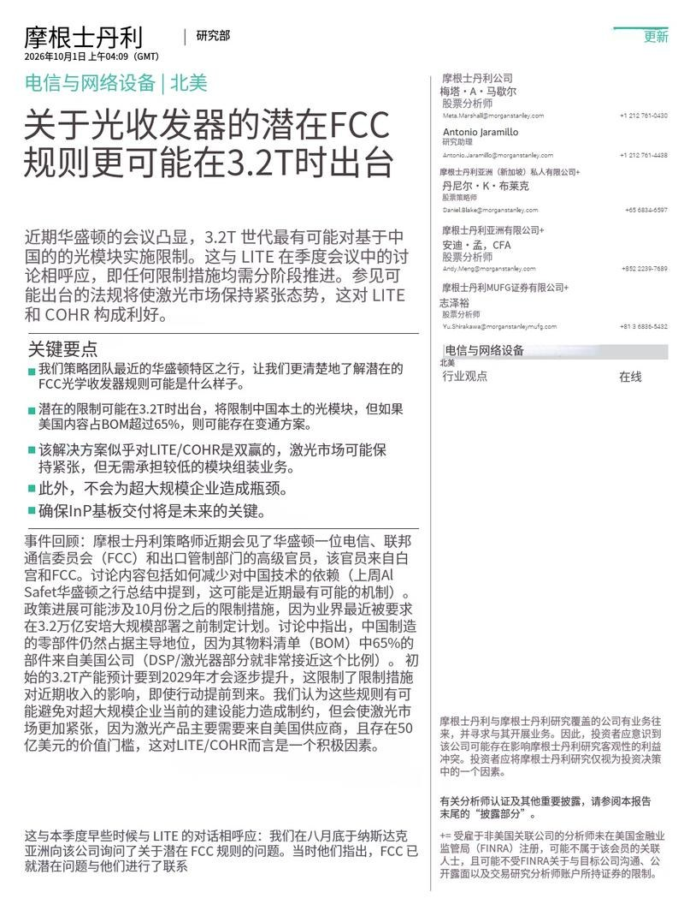
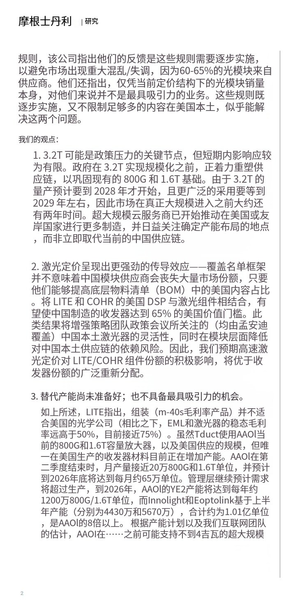
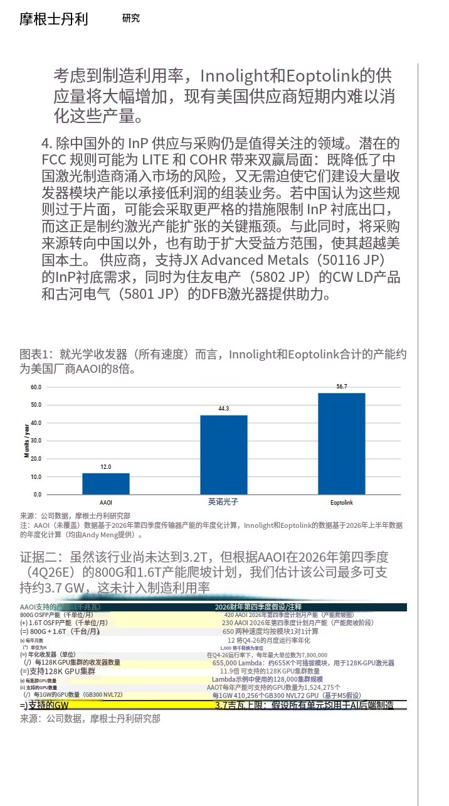
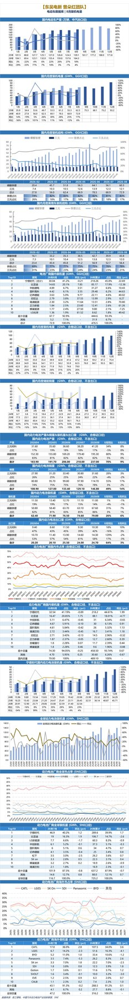
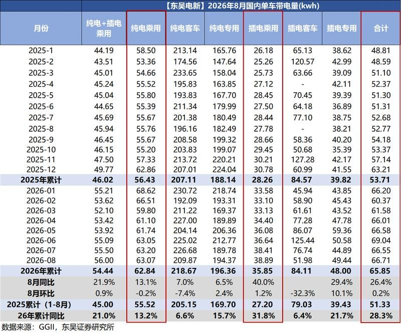

调研纪要 · 2026-10-02 新闻日报
星球 ID: 28855458518111 | 共 50 条帖子 | 精华 15 条
| 查看研究积累
书签
摩根士丹利：关于光收发器的潜在FCC规则更可能在3.2T时出台
摩根士丹利：关于光收发器的潜在FCC规则更可能在3.2T时出台



3 图
‼️‼️【FCC更新】3.2T价值含量规则落地，产业链分工重塑，关注光模块龙头
‼️‼️【FCC更新】3.2T价值含量规则落地，产业链分工重塑，关注光模块龙头
事件：近期市场关注美国针对高速光模块提出的美国价值含量要求。我们认为，政策影响不宜简单理解为“中国光模块厂商被限制”，更准确的理解是：#美国进一步强化DSP、激光器等核心高价值器件的本土供应、而光模块制造、封装、测试及规模化交付仍保留全球供应链空间。
我们认为，本轮规则对产业链的核心影响在于利润重新分配，而非需求被破坏。DSP、激光器等环节占据光模块较高价值量，美国希望将其中更多利润留在本土供应链；与此同时，AI数据中心持续推进800G、1.6T并向3.2T升级，模块整体需求仍由算力资本开支驱动。换言之，#美国可能进一步强化“美国核心器件+中国模块制造”的产业链分工。
对国内光模块龙头而言，影响更多体现为供应链结构变化。中际旭创、新易盛具备全球客户认证、规模化制造、产品迭代和海外交付能力，在高端光模块产业链中的核心竞争力并不只来自单一器件，而来自从产品设计、光电协同到模块集成和量产交付的综合能力。若美国价值含量要求主要集中于核心器件，中国厂商仍有望凭借制造效率和规模优势参与全球3.2T产品放量。
📣📣投资逻辑上，我们认为应重点关注两条主线：一是北美AI资本开支持续增长带来的高速光模块需求；二是3.2T产品升级带来的单模块价值量提升。短期政策可能带来供应链扰动，但中期产业趋势仍取决于AI算力建设和高速率光模块渗透率。
👉🏻👉🏻建议持续跟踪中际旭创、新易盛在北美客户中的份额变化、3.2T产品进展及核心器件供应链调整情况。
摩根士丹利报告总结：北美电信网络设备—FCC或针对3.2T光模块出台监管规则
摩根士丹利报告总结：北美电信网络设备—FCC或针对3.2T光模块出台监管规则
核心要点
1. 政策方向：监管大概率落在3.2T光模块
投行团队华盛顿调研显示，FCC拟通过《
Covered List ↗》实施管制，约束中国产3.2T光收发模块，最早或2026年10月启动，采用分阶段落地模式。
设置豁免条款：若物料清单（BOM）中美国本土元器件占比≥65%，中国制造的光模块仍可进口；DSP+激光器就可接近该占比门槛。
3.2T规模放量预计到2029年，短期对收入冲击有限；政策目标是重塑下一代供应链，而非立刻替换现有800G/1.6T中国供应，不会对云厂商（超大规模客户）现有建设造成瓶颈。
2. 利好上游激光器厂商LITE（Lumentum）、COHR（Coherent）
- 规则无需美国企业切入低毛利的光模块组装业务（组装业务毛利率仅30‑40%，激光器稳态毛利率超50%，最高接近75%），主要利好高速激光器价格与组件份额。
- 中国模块厂商（中际旭创Innolight、新易盛Eoptolink）若要满足65%美系物料要求，会减少选用国产激光器，降低国产激光器冲击市场的风险。
3. 美国本土光模块产能严重不足
- 美国仅AAOI具备可观光模块制造能力，预计2026年末年化产能1200万只800G/1.6T；中际旭创+新易盛年化合计1.01亿只，是AAOI的8倍以上。
- AAOI满产情况下仅可支撑约3.7GW AI算力网络需求。想要大规模替代国内厂商供给，需要多年大规模扩产，短期美国产能无法承接需求转移。
4. 关键风险：InP磷化铟衬底供应链
- InP衬底是激光器产能扩张的核心瓶颈。若中方认为政策不公，或收紧InP衬底出口。
- 非中国地区供应商将间接受益：JX Advanced Metals、住友电工、古河电工。
与LITE企业访谈的印证
LITE反馈监管需要分阶段实施，当前60‑65%光模块来自中国，骤然管制会造成供需剧烈扰动；同时公司对光模块组装业务兴趣有限。本次FCC政策的分阶段+物料占比豁免设计，契合企业的诉求。
四大核心观点提炼
1. 监管瞄准3.2T下一代产品，短期影响可控，不扰动800G/1.6T存量；
2. 受益主体是激光器芯片环节，不一定带来光模块份额大洗牌；
3. 美国本土模块产能缺口巨大，短期不具备大规模替代条件；
4. InP衬底供应链是最大潜在风险点，日本相关供应商有望受益。
风险提示：报告为机构研究观点，不构成投资建议。
大摩出一份的关于FCC或针对3.2T光模块出台监管政策的研究报告
大摩出一份的关于FCC或针对3.2T光模块出台监管政策的研究报告
其观点：
投行团队调研显示，FCC可能约束中国产3.2T光模块，最早或2026年10月启动，采用分阶段落地模式。
设置豁免条款：若物料清单（BOM）中美国本土元器件占比≥65%，中国制造的光模块仍可进口；DSP+激光器就可接近该占比门槛。
3.2T规模放量预计到2029年，短期对收入冲击有限；政策目标是重塑下一代供应链，而非立刻替换现有800G/1.6T中国供应，不会对云厂商（超大规模客户）现有建设造成瓶颈。
这大 利好美企上游激光器厂商Lumentum、Coherent
-光模块毛利率30‑40%，激光器毛利率超50%～75%…
美国仅AAOI具备光模块制造能力，大概产能1200万只800G/1.6T；中际旭创+新易盛合计1亿只以上，根本不及…
60‑65%光模块来自中国，美国本土光模块产能缺口巨大，短期不具备大规模替代条件…
美国FCC更可能把对中国光模块的限制“卡在3.2T这一代”，而不是动现在的800G/1.6T；只要BOM里美国含量≥65%，中国组装的模块仍可读入，真正受益的是...
美国FCC更可能把对中国光模块的限制“卡在3.2T这一代”，而不是动现在的800G/1.6T；只要BOM里美国含量≥65%，中国组装的模块仍可读入，真正受益的是美国激光/DSP等核心器件厂（LITE、COHR），而不是美国低毛利封装厂。
一、FCC规则大概长什么样
- 机制：用 FCC Covered List，不是全面禁运。
- 节点：3.2T 是最可能受限代际；行业被要求在大批量部署前拿出“美国/友岸”制造方案。
- 时间：3.2T 真正放量在 2028–2029年，即便10月出政策，也给市场约2年缓冲。
- 例外：中国造的收发模块仍可进口，条件是 BOM美国含量≥65%（Marvell DSP LITE/COHR激光就能凑到附近）。
- 目的：重塑下一代供应链，不掐断超大规模云厂（hyperscalers）当前建设。
二、谁有增量
- ? Lumentum（LITE）、Coherent（COHR）：激光/EML是满足65%美国价值量的关键，激光市场会持续紧，定价权增强。
- ? Marvell 类美国DSP厂商：提高美国BOM占比的拼图。
- ?? 中际旭Innolight / xys，Eoptolink：模块份额不一定被夺走，但会被逼用美国激光/DSP；中国激光厂替代空间被压。
- ? 美国光模块组装厂不是最大赢家：LITE自己都说过，模块组装毛利率30% ，不如激光/EML（50% ，现在近75%）吸引人。AAOI是唯一有规模的美国模块产能，但体量远不够替代中国厂。
三、产能对照（很关键）
- AAOI 到2026年底：65万只/月 800G 1.6T → 年化780万只 → 最多撑 3.7GW（GB300 NVL72口径）。
- 旭创 新易盛 2026上半年年化：4430万 5670万 = 1.01亿只，是AAOI年底产能的 8倍以上。
- 结论：美国短期接不住中国模块供给，强制全面替换会引发断供，所以政策才选“分阶段 美国含量门槛”。
四、后续最该盯的变量
1. InP衬底供应：激光产能瓶颈；若中国反制限制InP衬底出口，全球激光扩产会卡住。
2. 非中国InP/激光器受益者：
- InP衬底
- CWLD
- DFB激光
3. 3.2T标准与云厂friend-shoring进度：微软/谷歌/Meta/亚马逊是否提前锁美国或日本供应链。
4. 中国反制路径：不是禁模块，而是卡上游材料/设备/衬底。
五、（报告视角）
- 光模块“份额迁移”故事被夸大；激光器/高端芯片价值量提升才是真主线。
- 旭创/新易盛：不是马上出局，但估值里“中国自主全栈”折价会上升。
- LITE/COHR：组件龙头，政策顺风，
摩根士丹利：会见华盛顿高级电信、FCC 和出口管制法律团队后，政策讨论表明，3.2T 收发器很可能成为分阶段实施限制的地方，可能最早在10月开始。
摩根士丹利：会见华盛顿高级电信、FCC 和出口管制法律团队后，政策讨论表明，3.2T 收发器很可能成为分阶段实施限制的地方，可能最早在10月开始。
即使是3.2T，中国收发器仍可进口，只要BOM中有65%来自美国公司的部分即可。
预计3.2T的初始产量要到2029年才会大规模增加。
国庆出行前瞻：总量偏强、量价分化，出境游结构更优【东财新消费棱镜·专题二十六】
国庆出行前瞻：总量偏强、量价分化，出境游结构更优【东财新消费棱镜·专题二十六】
🔍截至节前最新预订数据，国庆旅游需求整体维持较高景气，但结构上仍表现为#量强于价、长线强于短线、稀缺供给强于标准化产品。具体来看，长线游、高星酒店、精品小团、出境游和邮轮表现相对突出；但全国旅游消费仍可能延续“人次增速高于收入增速”特征。出境游构成结构性例外，高端长线和定制产品客单价向上。
🛩航旅纵横截至9月14日数据显示，双节国内航线机票预订量同比增长超过10%，#其中2000公里以上航线同比增长约14%，航空票价具备一定改善基础，但不同日期及航线分化较大，且燃油附加费上涨使消费者支付票价的增幅高于航司实际裸票收入增幅。
🏨#酒店行业层面量增价稳、间夜增速快于单房收益。华住9月25日至10月7日预订间夜量同比增长22%，预订率仅提高约2个百分点，行业供给扩张仍在稀释入住率及RevPAR弹性。核心城市、热门景区、演唱会场馆及稀缺区位酒店提价更为明显，普通城市和标准化房源仍偏向以价换量。
⛰️#头部景区资源已从需求验证进入容量约束阶段。九寨沟、头部文博场馆及部分主题乐园预约紧张，黄山等山岳景区通过分时预约和候补机制调节客流。景区门票整体预计仍以量增为主，基础票价弹性有限，能够延长停留时间并承接二次消费的项目相对占优。
🗺#出境游是本轮少数客单价改善相对清晰的细分市场。民航局口径显示，假期国际机票预订量同比增长22.5%。周边目的地仍是基本盘，其中首尔机票预订量同比增长超过50%，新加坡、吉隆坡、河内和伦敦均增长超过20%。同时“请3休13”推动长线化和组合化，同程平台多国联游产品预订热度同比增长超过65%，平均串联2.8个国家；欧洲、澳洲产品搜索热度月环比增长超过3倍。
节日愉快！澳门9月GGR数据：同比-1.2%，低于预期
节日愉快！澳门9月GGR数据：同比-1.2%，低于预期
根据DICJ，9月澳门行业GGR在去年低可比基数下，仍然同比下滑1.2%至180.6亿澳门元，日均GGR为6.02亿澳门元（vs. 已下调后的一致预期为+2.2%，8月初一致预期为9.5%）。2026YTD GGR同比+3.2%。
[太阳]当前10月行业预期增长中位数为同比持平（range -3.5%~+4%）；全年一致预期中位数为+3%（range +2%~+4%）。
亚洲债券在美债反弹后上涨，股市下跌：市场综述
亚洲债券在美债反弹后上涨，股市下跌：市场综述
中国国资企业披露英伟达 Blackwell 芯片交易
中国国资企业披露英伟达 Blackwell 芯片交易
腾讯向甲骨文租用10万块芯片以加速人工智能布局
腾讯向甲骨文租用10万块芯片以加速人工智能布局
中国经济增长放缓后考虑更具针对性的财政支持
中国经济增长放缓后考虑更具针对性的财政支持
消息人士称，美国放缓对华飞机零部件出口，特朗普寻求在贸易谈判中增加筹码
消息人士称，美国放缓对华飞机零部件出口，特朗普寻求在贸易谈判中增加筹码
日媒：日本经济界代表团拟明年3月访华
日媒：日本经济界代表团拟明年3月访华
台湾媒体报道，台湾向美国采购的F-16V战机，经过从拍板出售至今共七年的等待后，首两架将在星期五（10月2日）飞抵台湾台东志航基地。
台湾媒体报道，台湾向美国采购的F-16V战机，经过从拍板出售至今共七年的等待后，首两架将在星期五（10月2日）飞抵台湾台东志航基地。
【东吴电新】碳酸锂周度更新（9.25-10.1）：本周进一步去库，锂价下跌
【东吴电新】碳酸锂周度更新（9.25-10.1）：本周进一步去库，锂价下跌
#价格：本周碳酸锂现货、精矿价格下跌。SMM电池级碳酸锂12.3万元/吨，周环比-9.2%；锂辉石精矿（CIF中国）1735美元/吨，周环比-8.7%。期货主力合约LC2701收盘价11.8万元，周环比-5%。
#库存：本周SMM碳酸锂新口径库存14.9万吨、去库0.4万吨。其中上游库存3.1万吨，环减0.03万吨；正极厂库存5.1万吨，环增0.15万吨；电芯厂及其他库存2.0万吨，环减0.03万吨；贸易商库存4.7万吨，环减0.5万吨。仓单量3.2万手，周环比-4%。
#产量：本周产量增加203吨至2.6万吨，其中辉石提锂产量环增557吨至14240吨，盐湖产量环减240吨至6088吨，云母提锂产量环增155吨至2892吨，回收料提锂产量环减269吨至2721吨。
#情绪面冲击延续价格承压、供给紧缺逻辑不变。情绪面，市场对隐性库存压力及下游排产、明年需求担忧。但基本面上旺季供需仍偏紧，9月以来国内锂盐检修产能陆续恢复、叠加津巴布韦部分货船到港，锂盐产量抬升，但整体有效供给弹性有限，10月下游排产环比微增、旺季趋势延续。年度看，26-27年碳酸锂供给紧平衡，27年价格中枢预计12万/吨左右。
投资建议：看好具备优质资源且利润弹性较大的公司，重点推荐赣锋锂业、国城矿业、盛新锂能、大中矿业、永兴材料、天齐锂业、中矿资源、华友钴业、雅化集团、藏格矿业，关注盐湖股份。
风险提示：需求不及预期
电动车数据库
电动车数据库


2 图
汽车核心新能源品牌9月销量速览：
汽车核心新能源品牌9月销量速览：
-比亚迪：交付463,561辆，YoY +17.0%，MoM +5.3%，Q3累计交付1,323,065辆，YoY +18.7%；
-零跑：交付105,656辆，YoY +58.5%，MoM +2.5%，Q3累计交付310,052辆，YoY +78.3%；
-鸿蒙智行：交付37,490辆，YoY -29.2%，MoM -11.0%，Q3累计交付124,637辆，YoY -14.2%；
-蔚来：交付37,408辆，YoY +7.7%，MoM +4.4%，Q3累计交付109,178辆，YoY +25.4%；
-小鹏：交付41,256辆，YoY -0.8%，MoM +5.5%，Q3累计交付118,390辆，YoY +2.1%；
-极氪：交付37,216辆，YoY +103.8%，MoM +0.6%，Q3累计交付110,034辆，YoY +108.2%；
-埃安：交付35,494辆，YoY +21.9%，MoM -2.4%，Q3累计交付106,864辆，YoY +29.2%；
-深蓝：交付30,185辆，YoY -10.2%，MoM +5.3%，Q3累计交付88,057辆，YoY -1.1%；
-理想：交付31,817辆，YoY -6.3%，MoM -15.6%，Q3累计交付99,964辆，YoY +7.2%；
-小米汽车：交付超40,000辆，Q3累计交付超100,000辆；
-岚图：交付13,025辆，YoY -14.4%，MoM +0.2%，Q3累计交付39,217辆，YoY -4.0%；
-智己：9月交付数据暂未公布。
赛力斯：达成新五年合作，组建专属团队升级问界业务
赛力斯：达成新五年合作，组建专属团队升级问界业务
10月1日，华为与赛力斯表示：9月30日，鸿蒙智行问界业务升级战略合作签约仪式在深圳举行，面向新五年，双方将持续锚定问界高端智能汽车品牌核心定位，联合组建问界业务专属团队，进一步升级问界业务，以专属专营更好地服务问界用户，持续推动问界新豪华品牌向上
对此，我们认为
1、短期来看，9月15日发布“问界关于鸿蒙智行合作模式的说明”后，市场针对问界长期发展前景存在一定的担心，本次合作升级公告，有望打消市场对于问界难以享受华为赋能的担心，赛力斯股价有望迎来反弹机会（#明日10月2日港股正常交易）
2、中长期来看，我们认为公司后续车型丰富度有望提升（预计28年非SUV产品）、渠道专属专营后公司销售费用率有望下降（26Q4报表有望验证）
[庆祝]欢迎交流~
天风通信丨蜂助手：从流量到Token布局赋能增长，大规模算力订单持续不断落地！
天风通信丨蜂助手：从流量到Token布局赋能增长，大规模算力订单持续不断落地！
🚀公司发布公告，签署57.17亿元算力服务协议。
🎁1、公司近日分别与C公司签署算力服务器采购协议、与D公司签署算力服务协议。采购协议总金额39.6亿元，服务协议金额57.17亿元(不含机柜服务费)。此前，公司已公告过和B公司签署算力协议约46.08亿元，近两月公司已落地合同金额超百亿元，对于未来年化收入贡献超20亿元!
[礼物]2、公司从流量到Tokens延伸布局，看好长期增长。公司已正式启动Token工厂建设。以自研端到端全链路MaaS平台为核心支撑，打通异构算力纳管、智能体调度、模型接入、计费结算完整业务链条，将底层原始算力加工为标准化、可计量、可按需调用的词元服务，实现算力资源向AI服务的产品化转化。
[礼物]3、公司主业稳定增长，算力业务带来增量业绩贡献，看好订单不断落地。公司主业包括数据流量运营，物联网，云终端等，持续稳定增长，同时积累了如运营商、华为、互联网/视频类公司等优质客户/合作伙伴资源。我们看好公司在算力业务的拓展能力，近两月百亿订单的斩获已证明其获客＆渠道能力，期待持续大订单落地赋能业绩高增长。建议投资者积极关注。
📞天风通信团队王奕红/唐海清/袁昊
【国泰海通海外科技】美光FY26Q4：CY27-28供需较CY26更紧，SCA增至26份，RPO提升至约1500亿美元
【国泰海通海外科技】美光FY26Q4：CY27-28供需较CY26更紧，SCA增至26份，RPO提升至约1500亿美元
#DRAM、NAND价格涨幅超预期，NAND弹性更大
-FY26Q4收入542亿美元（超预期5.6%），Non-GAAP毛利率87.0%（超预期0.9pcts），EPS 33.42美元（超预期5.3%）。
-量价拆分：NAND位元出货环比约+10%、价格约+30%（vs预期+5%/+20%）；DRAM位元出货中个位数增长，价格涨幅10%高段，略超预期。
#FY27Q1毛利率受员工激励成本影响，为全年底部，收入逐季环比增长
-FY27Q1指引收入615±15亿美元（vs预期563亿美元），EPS 38.15±1美元（vs预期35.7美元），Non-GAAP毛利率约86.25%（vs预期86.5%）。
-毛利率指引略低于预期主要因FY26Q4上调的员工激励（制造端部分递延至FY27Q1确认）和新厂启动费用，合计增加FY27Q1成本约10亿美元。
-FY27全年每季度收入环比增长；FY27Q1为全年毛利率底部，后续在持续涨价和经营改善下毛利率继续上行。
#长协RPO单季增加500亿美元，新签定价随市场价格上移
-相比上次业绩会：SCA从16份增加到26份；RPO从约1000亿美元提升到约1500亿美元；客户资金承诺增加到320亿美元；协议期限延伸至2031年，另有两份协议各延期一年至2031年。
-26份SCA预计占2030年前收入35%以上，其中3/4的SCA收入有定价框架（多数设价格上下限），1/4按市场价定期谈判；新增SCA按当前更高的市场价格定价。重申即使按底价，毛利率也显著高于历史周期峰值。
-2027年产出75%以上已被客户承诺（含SCA及非SCA客户提前下单），长期SCA目标仍为约占2030年前收入50%。
#供需表述从“紧张延续至2027年后”调整为“CY27-28明显更紧”
-上次业绩会以来需求进一步走强，预计CY27、CY28供需均明显紧于CY26，看不到供需恢复平衡的时间点。SCA与非SCA客户均在追加供给需求，多数客户谈判已聚焦2028年，部分客户要求2030年后的供给保障。
#HBM CY27供给基本售罄，与常规DRAM的毛利差收窄
-CY26 HBM价格已于去年锁定，CY27绝大部分供给已完成签约，价格较CY26大幅上涨，与常规DRAM的毛利差收窄。
-大客户降低HBM规格是客户在内存紧缺下为多出货整机做的优化，边际效果递减，不改变CY27-28 HBM需求增速快于常规DRAM的判断。
#Capex上修主要投向洁净室，资本回报将逐步提升
-FY27 capex计划上调：FY27Q1约115亿美元，FY27H1约250亿美元，FY27H2更高，全年隐含超500亿美元（上季度指引各季度高于FY26Q4的约100亿美元）。建筑capex占比提升，设备产能将按最新需求判断适时投放，扩产纪律不变。
-资本回报：2026年12月9日（CHIPS协议签署两周年）起提升股东回报，长期返还100%超额现金，以回购为主。
国泰海通海外科技 秦和平/曾天
【中泰电子|美光】业绩超预期，SCA增至26份，CY27—CY28供需预计进一步趋紧！
【中泰电子|美光】业绩超预期，SCA增至26份，CY27—CY28供需预计进一步趋紧！
‼️美光发布FY26Q4财报（26/05/29—26/09/03），营收、毛利率及EPS均创公司历史新高，高于此前公司指引！
【营收】542.29亿美元，qoq+30.8%，yoy+379.3%，高于公司指引中值500亿美元，高于此前BBG预期的514.30亿美元。
【净利润】383.98亿美元（非GAAP口径），qoq+33.1%，yoy+1006.9%，高于此前BBG预期的364.96亿美元。
【毛利率】87.0%，qoq+2.1pcts，yoy+41.3pcts，高于公司指引的约86%。
【净利率】70.8%，qoq+1.2pcts，yoy+40.1pcts。
[太阳]存储价格继续上涨，价格与出货增长共同推动收入提升！
1）分产品看：FY26Q4 DRAM/NAND营收分别为397.71/141.02亿美元，占总收入73%/26%，收入qoq+27%/+42%；其余约1%主要来自NOR等产品。
➠DRAM位元出货环比中个位数增长，ASP环比增长约10%高段。
➠NAND位元出货环比约+10%，ASP环比约+30%。
2）分应用看：FY26Q4云内存/核心数据中心/移动与客户端/汽车与嵌入式收入分别占30%/33%/24%/13%，收入qoq+18%/+56%/+14%/+47%，yoy+258%/+1042%/+249%/+376%；毛利率分别为83%/90%/90%/84%，qoq持平/+2.9pcts/+2.6pcts/+4.7pcts。
➠FY26Q4数据中心SSD收入接近100亿美元，为上年同期的10倍以上，占公司NAND收入超过2/3；AI推理中的KV cache卸载及替代HDD需求进一步拓展SSD市场。
➠移动与客户端业务收入增长由涨价和产品结构改善推动，位元出货下降形成部分抵消。公司聚焦高端PC和旗舰手机，FY26Q4该业务近一半收入来自1-gamma产品。
3）供需展望：公司预计CY27、CY28存储供需将较CY26更紧张，DRAM和NAND均面临供应约束，尚无法确定供需恢复平衡的时间。Agentic AI带动CPU及配套DDR、LPDDR和SSD需求；HBM占比提升、后续代际对晶圆产能的消耗增加，以及新洁净室建设和爬坡周期较长，继续制约供给增长。预计CY27、CY28行业DRAM位元出货增长处于20%低段，NAND约20%中段。
[太阳]CY27 HBM协议价格显著提升，先进节点持续爬坡！
1）HBM：FY26Q4 HBM收入增速高于公司整体收入增速，HBM4爬坡顺利。公司已就CY27绝大部分HBM位元供应达成协议，价格同比显著上涨，新价格从CY27年初开始执行，有望缩小HBM与常规DRAM的毛利率差距。
➠公司正与英伟达合作开发定制HBM4E方案NVHBM，用于下一代GPU及NVLink Fusion平台。洁净室准备进度快于计划，预计CY27年初开始产出。
2）DRAM/NAND：1-gamma DRAM及G9 NAND已成为公司当前产量最大的节点。下一代1-delta DRAM及下一代NAND节点研发进展顺利，预计CY27H2开始量产。
[太阳]SCA增至26份，资本开支上调以保障长期供应！
1）SCA：已签署26份多年期take-or-pay协议，较上季16份增加10份，预计对应收入占截至CY30年公司收入的35%以上。部分协议延伸至2031年，客户财务承诺增至320亿美元，绝大部分为现金订金。
➠预计SCA收入的四分之三具有明确的定价框架，其余四分之一根据市场价格定期议价，新协议定价继续提高。
➠FY27超过75%的出货已获客户承诺，客户供应分配讨论已推进至CY28。
2）Capex：FY26净资本开支273.67亿美元，其中FY26Q4为107.74亿美元；FY27Q1净资本开支预计约115亿美元。计划上调FY27资本开支，增量主要投向CY28末及以后洁净室供给。
➠爱达荷ID1及台湾铜锣厂预计CY27年中分别开始晶圆产出及实现有效出货，ID2、日本扩建厂及新加坡NAND新厂预计CY28开始陆续产出，纽约首厂预计CY30开始晶圆产出。
[太阳]下季营收继续增长，毛利率短期受激励薪酬影响！
FY27Q1营收指引615±15亿美元，中值qoq+13.4%；非GAAP毛利率指引约86.25%，qoq-0.75pcts；EPS指引38.15±1.00美元。预计FY27各季度收入环比增长，FY27Q1毛利率主要受到FY26制造端激励薪酬上调后计入库存、并随销售结转成本的影响，为全年低点，此后毛利率进一步提高，价格继续温和上涨。
[玫瑰]持续关注存储行业供需紧张及产品结构升级，重点跟踪CY27 HBM新价格兑现、SCA执行及新增产能爬坡。
风险提示：下游增长不及预期。
[庆祝]派点请支持中泰电子：王芳/杨旭/丁贝渝/张心阳
《广发海外电子通信》
《广发海外电子通信》
☄️ 2026/9/30 MU（Micron）F4Q26 业绩纪要
☀F4Q26 略超预期
-收入 $54.23bn，+31%QoQ/+379%YoY，略优于预期的$52-53bn
-non-GAAP GPM 87.0%（+2.1ppQoQ），符合预期
-non-GAAP EPS $33.42，略优于预期的 $32 - $33
-全年 FY26：收入 $133.2bn（+256%YoY），non-GAAP GPM 81.1%（+40ppYoY），EPS $75.52（+811%YoY）；数据中心收入同比约 4 倍，全年 DRAM 收入超 $100bn
☀产品与分部
1）DRAM：$39.8bn，占比 73%，+27%QoQ/+343%YoY；bit 出货 mid-single-digit%，价格 high-teens%，符合市场预期
NAND：$14.1bn，占比 26%，+42%QoQ/+526%YoY；bit 约 +10%，价格约 +30%，略高于市场ASP+20%的预期
2）分 BU：Core Data Center $18.0bn（33%，+56%QoQ，GPM 90%）；Cloud Memory $16.3bn（30%，+18%QoQ，GPM 83%）；Mobile & Client $13.1bn（24%，+14%QoQ，GPM 90%）；Auto & Embedded $6.8bn（13%，+47%QoQ，GPM 84%）
3）HBM：Q4 收入增速快于公司整体；2027 绝大部分 HBM bit 已签约，价格同比显着上调，毛利率与常规 DRAM 差距收窄；与 NVIDIA 合作定制 HBM4E（NVHVM）
4）数据中心 SSD：Q4 收入近 $10bn（同比超 10 倍，占 NAND 逾 2/3）；日历 2026 有望连续第 5 年创数据中心 SSD 市占纪录
☀F1Q27 营收指引优于预期，毛利率略低于预期
-收入 $61.5bn ± $1.5bn vs 彭博 $56.5 bn 及买方预期$59 bn
-non-GAAP GPM 约 86.25%（管理层称FY27底部），略低于市场一致预期 87%，主因薪酬激励成本计入制造相关费用，约影响10亿美金，若剔除该项成本，毛利率约在87.5%
-non-GAAP OpEx 约 $2.06bn
-EPS $38.15 ± $1.00（股本约 11.5 亿）vs 彭博 $36 及买方预期$37.5
☀其他重点
-供需：预计 CY2027–2028 存储供需比 2026 更紧；尚看不见供需再平衡时点；2027 超 75% 产出已锁定
-SCA：累计 26 份，约占至 2030 收入 35%，管理层长期目标50%；RPO 约 $150bn；客户财务承诺升至 $32bn（多为现金押金）；部分协议延至 2031
-CapEx：F1Q27 约 $11.5bn，上半年约 $25bn，下半年更高；FY27 CapEx 上调（以建设/洁净室为主）
-费用/现金：Q4 OpEx $2.6bn；经营现金流 $44bn，CapEx $10.8bn，FCF $33.2bn；现金及投资 $73.5bn，净现金 $68.3bn；库存 $10.4bn / DIO 129 天（预计后续下降）
-资本回报：拟自 2026/12/9（CHIPS 协议满两年）起加大股东回报，长期目标超额现金 100% 返还；回购授权待扩充
-行业 bit：DRAM CY2026 mid-20s%、2027–28 low-20s%；NAND 2026 low-20s%、2027–28 mid-20s%；HBM 增速持续快于常规 DRAM
广发HK观点
盘后股价上涨约2%后回落，主因市场此前预期已然较高，存在短期兑现压力，后已反弹至平盘之上。但我们认为后续仍存在多项催化，HBM4谈价幅度有望超出市场预期，更为积极的股东回报均为推动股价上行的因素
美光电话会议上最有价值的评论可能是，他们预计 2028 年的供应将比 2026 年更加紧张。
美光电话会议上最有价值的评论可能是，他们预计 2028 年的供应将比 2026 年更加紧张。
一些分析师声称2028年将出现供应过剩。这太荒谬了。
这条评论告诉我们，2028 年的大部分货运量已经确定。长期协议的签署数量已经足够多，2028 年的货运量已在掌控之中。
为什么存储类股票目前的市盈率如此之低？显然，因为大家都认为这波繁荣只是昙花一现。
不过，我们不妨再仔细想想。我们无法预知2029年或2030年的情况，但至少我们可以把2028年之前的需求视为确定无疑的，不是吗？
如果需求能够持续到 2028 年，我认为市盈率至少应该比现在更高
高盛——美光科技（MU）：业绩与指引强劲，新签客户协议叠加资本开支上修以支撑供给扩张
高盛——美光科技（MU）：业绩与指引强劲，新签客户协议叠加资本开支上修以支撑供给扩张
一、核心交易观点
高盛预计美光股价将温和走高。三季度业绩与四季度指引均大幅跑赢市场预期，部分被毛利率小幅不及预期所抵消，且此前投资者预期已处高位。与同业一致，美光认为DRAM与NAND供需紧平衡将持续至2027及2028年。本季度美光新签10份长期客户协议，累计已签26份，覆盖至2030财年预期营收约35%（目标逐步覆盖50%），其中约75%包含结构化定价框架。高盛认为这些协议是股价积极因素，有助于提升投资者愿意为"峰值盈利"支付的倍数。尽管如此，行业正加速供给扩张以满足需求，但高盛判断最早要到2028年市场才可能出现实质性宽松。基于当前水平风险/回报大致平衡，维持中性评级；若行业供给纪律持续至2028年及以后，将考虑转为更积极看法。
二、对覆盖板块的溢出效应
• 半导体设备：受2027财年资本开支指引上修及管理层关于洁净室与设备提前拉货的表态提振，对应用材料（AMAT，买入）和泛林集团（LRCX，买入）产生正面溢出。
• NAND：对闪迪（SNDK，买入）产生正面初步反应，因管理层对NAND供给格局给出积极表述。
三、季度业绩：全面跑赢高盛及市场预期
• 总收入：542.3亿美元，大幅高于高盛预估519.1亿美元及市场预期509.5亿美元。
• 毛利率：87.0%，略低于高盛87.3%但与市场86.9%基本持平。
• Non-GAAP EPS：33.42美元，高于高盛32.54美元及市场31.63美元。
• DRAM收入：398亿美元，高于高盛392亿美元及市场385亿美元。
• NAND收入：141亿美元，大幅高于高盛125亿美元及市场123亿美元。
四、战略客户协议：锁量锁价构筑盈利底
• 美光累计签署26份协议（上季度为16份），覆盖数据中心、消费、汽车等多终端，一般为期五年，含年度"照付不议"营收目标及预付款（迄今累计320亿美元）。
• 协议覆盖至2030财年约35%的预期营收，目标逐步提升至50%。
• 约75%的协议包含结构化定价条款。管理层披露，已签协议在保底价格下的五年承诺营收总额约1,500亿美元，且对应毛利率高于此前周期峰值水平。
• 合作方包括4家超大型客户（其中2家为超大规模云厂商）及3家中型客户。
五、制造与供给：资本开支大幅上修，全球产能加速落地
• 美光正加速全球晶圆厂建设与生产计划，2027财年资本开支将显著跃升——其中逾半数增量用于支持HBM及常规DRAM产能扩张。
• 从2026财年四季度108亿美元CapEx基数起步，2027财年一季度预计115亿美元、二季度135亿美元、下半年合计超250亿美元。高盛现模型化2027财年CapEx为550亿美元。
• 爱达荷首厂：提前至2027年年中产出。
• 新加坡工厂：2028年下半年产出。
• 广岛工厂：洁净室完工提前至2028年末。
• 纽约工厂：已破土动工，预计2030年供给。
六、DRAM：供给增速可控，HBM持续放量
• 美光预计2026年全球DRAM bit供给增速约25%区间中段（略高于此前预期），2027及2028年均为20%区间低端，市场紧俏程度较2026年进一步加剧。
• HBM方面：管理层此前预计2025年HBM基准TAM为350亿美元，行业营收至2028年可按40% CAGR增至超1,000亿美元。美光HBM供给年内持续爬坡，并披露正与英伟达合作开发定制HBM4E产品。
七、NAND：供给受限，bit增长依赖制程微缩
• 美光预计2026年NAND bit供给增速略低于25%区间低端。2027及2028年预计在25%区间中段，两年供给持续受限。
• 2027年前bit供给增长主要依赖设备升级与技术微缩，绿地新厂预计2028年年中才上线。
八、2027财年一季度指引：营收与EPS大幅超预期，毛利率承压
• 营收指引中值：6,150亿美元，大幅高于高盛5,770亿美元及市场5,757亿美元。
• Non-GAAP毛利率指引：86.25%，低于高盛88.1%及市场87.4%——主因本季度将销售高成本库存（受薪酬费用上升影响），该效应在二季度将部分消退。
• Non-GAAP EPS指引：37.15–39.15美元（中值38.15美元），高于高盛37.06美元及市场35.81美元。
九、盈利预测调整
高盛上调近期Non-GAAP EPS预估平均约10%，以反映更高的营收假设。具体调整幅度：2026日历年上调3.3%，2027日历年上调12.3%，2028日历年上调12.1%，2029日历年上调13.1%。毛利率预估小幅下调约40–70个基点。
十、目标价与估值
• 将目标价从1,100美元上调至1,250美元，基于18倍P/E（倍数不变）乘以正常化EPS预估70.00美元（此前为62.00美元，因营收与利润率假设上修）。
• 当前股价1,065.11美元，目标价隐含17.4%上行空间。
• 牛熊情景：牛案（19倍P/E × 84美元EPS）目标价1,596美元（+71.5%）；熊案（12倍P/E × 42美元EPS）目标价504美元（-45.8%）。
• 股息率约0.1%，总潜在回报约34.4%。
十一、评级与关键风险
维持中性评级。DRAM与NAND市场基本面持续健康，客户协议披露增强了周期盈利的持久性。但高盛担忧2028年供给大幅扩张可能导致HBM价格动能放缓，这是维持中性的核心原因。
关键上行风险：（1）HBM路线图执行与份额提升持续；（2）AI加速器HBM含量超预期跃升；（3）供给纪律长期维持。
关键下行风险：（1）CXMT（长鑫存储）持续获取DRAM份额冲击定价；（2）2028年供给释放超预期致HBM价格承压；（3）行业资本开支竞赛失控。
摩根大通——台积电（2330.TW）：预期三季度业绩强劲、四季度指引健康且产能爬坡加速——目标价上调至3300新台币
摩根大通——台积电（2330.TW）：预期三季度业绩强劲、四季度指引健康且产能爬坡加速——目标价上调至3300新台币
• 投资评级与估值：重申增持，目标价上调至3300新台币
摩根大通维持台积电增持评级，将2027年6月目标价由3200新台币上调至3300新台币，基于约20倍12个月远期市盈率。上调依据为AI驱动的先进制程需求持续强劲、N3与N2产能扩张提速，以及A14制程节点提前量产带来的增量贡献。当前股价为2475新台币。
• 三季度业绩与四季度指引：全面超预期
预计台积电三季度营收将达指引区间上限，摩根大通预估为458.4亿美元，环比增长14%，毛利率约66.8%，亦处于指引高端。四季度营收指引预计环比增长10至12%，摩根大通预估为11%，受N3产能瓶颈及年内无进一步提价限制，全年美元营收增速预计达41%，略高于公司略超40%的指引。毛利率指引预计维持在65.5至67.5%区间，主因N2制程稀释效应及海外晶圆厂爬坡拖累。
• 先进制程供需格局：N3紧俏延续至2027年，N2成2028年核心引擎
N3产能持续吃紧，2027年供需缺口将较2026年的约60万片进一步扩大。英伟达预计将占据2027年N3晶圆出货量的55至60%，谷歌、AWS等需求亦强劲。N3紧张局面预计2028年才缓解，因更多产能上线且加速器与CPU需求向N2迁移。2028年N2产能预计达21万片月产能，成为主要增长驱动力，占晶圆总收入比重将从2027年的约20%升至30%以上。N2需求由旗舰加速器项目（英伟达Feynman、AMD MI500、谷歌TPU v9、AWS Trainium 4）及数据中心CPU（AMD Venice、英伟达Rosa、谷歌Axion 3、亚马逊Graviton 6等）共同拉动。
• A14制程提前量产：良率超预期，2028年下半年即可贡献营收
A14制程原定2028年量产、2029年产生营收，但近期供应链核查显示其风险试产可能提前至2027年上半年，量产爬坡提前至2028年上半年，2028年下半年即可录得约18亿美元营收。A14 SRAM及器件良率已达90%以上，初期量产将在新竹Fab 20展开，后续扩展至台中Fab 25及高雄Fab 22。台积电正尝试将HPC需求与智能手机需求分流至不同节点，以避免当前N3全面拥挤的局面。
• 2027年全面提价与混合均价跳升
受强劲AI需求及代理式AI等新用例驱动，2027年台积电将实施更广泛的晶圆提价：先进制程（N3、N2）涨幅约10%，成熟制程（N7及以上）将迎来自本轮AI半导体上行周期以来的首次提价，幅度为低至中个位数。叠加N2与N3占比提升（2027年约占晶圆销售60%，2026年为40%）及N3产能更多倾斜至HPC（较移动芯片溢价20至25%），预计2027年混合晶圆均价将同比上涨25%，支撑毛利率维持在65至70%区间。
• 资本开支大幅上修：2026至2028年累计或达2500亿美元
为支持N3、N2及A14激进的产能爬坡，摩根大通将台积电2026至2028年资本开支预期分别上调至640亿、860亿及1000亿美元。N3产能预计2028年底达25万片月产能峰值，N2产能2027年底及2028年底分别达11.8万及21万片。此外，美国德州第二晶圆集群传闻具备可信度，但最终决策阶段可能落在2030年之后，近期美国产能扩张仍集中于亚利桑那州。
• 竞争格局：N2节点市占率料维持95%以上
英特尔18A等效于台积电N3E，14A（2028年底量产）等效于N2或N2P，仍落后台积电A14。在极端产能紧张下，英特尔与三星代工或获得部分非关键项目份额（如ADAS、智能网卡、低端苹果项目及HBM基底芯片），但N2节点台积电市占率预计稳守95%以上。后端封装领域，英特尔EMIB-T构成一定竞争，但台积电3DSoIC与COUPE平台有望分别成为3D封装与CPO的行业标准，延续CoWoS在2.5D封装的统治地位。
• 毛利率展望：中高位60%区间震荡，2027年底至2028年初或逼近70%
未来数季毛利率受N2稀释及海外厂爬坡影响，预计维持在65至70%中高位区间。2027年一季度起提价生效、N3需求强劲及跨晶圆厂协作将部分对冲N2稀释。待N2稀释效应减弱（预计2027年底或2028年初），毛利率有望逼近70%。
• 盈利预测与财务预测
因N3与N2需求强于预期、毛利率展望略优及A14提前量产，摩根大通将2027年及2028年每股盈利预测分别上调5%及6%至147.80新台币及190.42新台币。2026至2028年营收预计分别为5.47万亿、7.60万亿及9.82万亿新台币，同比增幅为44%、39%及29%。调整后净利润分别为2.82万亿、3.83万亿及4.94万亿新台币。
• 关键风险
下行风险包括AI资本开支增长周期持续性存疑，以及2026年下半年PC与智能手机需求疲弱带来的负面冲击。
巴克莱——美国股票策略：AI风险溢价的演变
巴克莱——美国股票策略：AI风险溢价的演变
• 核心主题：AI基建资本洪流重塑跨资产风险定价
超大规模云厂商、新云及数据中心SPV通过IG债、HY债、可转债及股权融资渠道，为史无前例的AI数据中心建设募资。2026年初至今，上述渠道融资总额达3460亿美元，较2025年全年的1720亿美元翻倍。巴克莱通过信用利差、CDS、股票风险溢价及股票波动率四类指标，系统追踪该生态的风险溢价演变。
• 超大规模云厂商：盈利上修与估值压缩并存，ERP因长端利率飙升而骤降
尽管二季度盈利普遍超预期且未来12个月盈利预期上修，超大规模云厂商股权风险溢价在过去两个月却急剧收缩。核心驱动为长端美债收益率飙升——10年期美债收益率在此期间上行70个基点至5.28%，成为主导变量。IG债期权调整利差多数在7月或8月触顶后小幅回落，但5年期CDS利差年内持续大幅走阔，当前 aggregate 已逼近75个基点。
• 隐含波动率结构性偏贵，平坦偏度暗示上行追逐
几乎所有超大规模云厂商的一年期隐含波动率较已实现波动率及股指波动率均处于历史高位（甲骨文除外，其已实现波动率升至历史高位）。过去五年波动率偏度极少如此平坦，叠加认沽/认购未平仓比率及成交量比率处于相对低位，共同指向市场对上行收益的持续追逐而非下行保护。
• 信用市场：史无前例的供给冲击导致利差全面走阔
过去两个季度，IG债、HY债及可转债利差均显著走阔。可转债板块虽为2026年最强赛道之一（年初至今回报+37%），但涨幅高度集中且年中以来部分回吐。近期回调由信用利差主导——自6月以来，HDN（超大规模云/数据中心/新云）可转债市值加权OAS大幅走阔236个基点至571个基点，而隐含波动率仍低于年中高位，确认此轮重定价为信用驱动而非波动率驱动。
• 个股风险画像摘要
谷歌：IG债OAS自5月走阔，ERP自7月下降，5年期CDS年内持续上行，2027年盈利预期全年上修，隐含波动率偏贵且偏度平坦。
亚马逊：ERP近一月下降，CDS走阔，2027年盈利预期近两季度大幅上修，隐含波动率偏贵且认沽/认购比率处于三年低位。
Meta：IG债利差8月下旬触顶后微幅收窄，ERP一月内骤降，CDS稳步走阔，盈利预期在二季度财报后大幅上修，偏度五年最平。
微软：IG债利差6月触顶后显著收窄，ERP自6月骤降，CDS年内上行，盈利预期随每次财报稳步上修。
甲骨文：与同业分化——ERP自5月上升，IG债OAS自6月急剧走阔，CDS年内上行，盈利预期近期才上修且过去四个季度三次不及共识，隐含波动率偏贵但已实现波动率同步高位。
• 数据中心与新云信用趋势：IG与HY利差双升
数据中心SPV的IG债（2040年代到期）过去一季度OAS走阔35至65个基点，当前约200个基点。HY债过去一季度走阔至少50个基点，多数超100个基点，但近一月微幅收窄。新云公司未来12个月市销率预期年初至今已翻倍。
• 可转债格局：市值扩张174%，信用利差走阔主导近期回调
HDN可转债总市值截至9月25日达816亿美元，年初至今扩张174%。自6月30日以来，市值加权OAS从335个基点走阔236个基点至571个基点，发行人之间分化显著。隐含波动率自年中高位回落，但信用利差走阔幅度远超波动率变化，确认重定价由信用渠道主导。
• 投资启示
AI基建融资规模史无前例，但风险溢价正在跨资产重定价：股权端因长端利率压制估值而ERP收缩，信用端因供给洪峰而利差走阔，波动率端因上行追逐而隐含波动率偏贵。投资者需警惕融资成本的持续性冲击——若长端收益率维持高位且信用利差进一步走阔，高杠杆数据中心SPV及新云公司的再融资风险将显著上升。超大规模云厂商凭借强劲现金流和盈利上修具备更强韧性，但估值对利率敏感度极高。可转债板块虽年初至今表现强劲，但信用利差主导的回调表明，选券能力（发行人基本面分化）比赛道beta更为关键。
摩根大通——资金流与流动性：股票脆弱性
摩根大通——资金流与流动性：股票脆弱性
尽管今年迄今（YTD）股市表现强劲，但股票仓位与杠杆水平已再度攀升至警戒区间——虽不及今年6、7月高峰时的极端程度，但仍对四季度（Q4）股市构成实质性逆风。与此同时，债券基金的资金流入很大程度上受股市收益驱动，但久期脉冲（Duration Impulse）持续疲弱，难以对收益率形成有效压制。外汇市场上，投机账户欧元空头已显著集中，但企业套保行为的结构性偏移正推动欧元兑美元呈现"实际做多"态势。
------
一、股票仓位与杠杆：过剩头寸卷土重来
报告回溯指出，今年6、7月曾经历一轮快速去杠杆，但至9月底，七大维度的杠杆与仓位指标显示过剩风险已重新积聚：
1. 对冲基金与期货杠杆：美国股票期货中资产管理机构与杠杆基金（Asset Managers & Leveraged Funds）的CFTC仓位占未平仓合约比例已反弹至年内高位，逼近2026年YTD峰值。
2. 广义股票仓位综合指标：跨资产仓位监测（Cross-Asset Positioning Monitor）显示，整体股票仓位百分位数已达0.70（满分1.0），处于2016年以来第70百分位，虽在9月已见顶，但仍处于历史偏高区间。
3. ETF空头回补接近尾声：全球最大股票ETF——SPY的空头占比（占流通股比例）于9月初触及历史低点后正触底回升；此前半导体ETF（SMH、DRAM）的空头回补行情也基本走完，意味着来自空头平仓的边际买盘动力衰减。
4. 动量交易员重建多头：纳斯达克、韩国综指（Kospi）、台湾加权及日经指数的短期与长期动量信号Z值回升，CTA（商品交易顾问）等趋势跟踪基金正重新建立科技重仓指数的多头仓位。4月至6月流行的"卖出中国互联网（HSCEI）、买入韩国与台湾"的相对交易策略，在8、9月再度活跃。
5. 杠杆ETF隐患重现：杠杆股票ETF的资产管理规模（AUM）与标的股票总市值的比率已从7月底低点回升，目前处于4月低点至6月高点区间的约70%分位。若进一步攀升，杠杆ETF在下跌市中的强制去杠杆效应可能再度成为波动率放大器。
6. 保证金账户杠杆高企：纽约证券交易所（NYSE）保证金净借差余额（Net Debit Balance，即保证金借差减去现金及保证金账户总贷方余额）占标普500总市值的比例在8月仍处于极高水平，表明美国个人投资者的融资杠杆几乎未因6、7月去杠杆而明显消退，仍是股市的重大脆弱点。
7. 整体评估：上述指标综合表明，股票仓位与杠杆过剩已"去而复返"，对Q4股市构成仓位层面的阻力。但报告同时强调，科技/AI板块的基本面支撑依然坚实——内存价格维持上行趋势、超大规模云厂商（Hyperscalers）2026/2027年资本开支共识预期已上调至8,049亿/1.09万亿美元、Hopper芯片租赁价格止跌回稳——因此即便再现类似6、7月的VaR冲击，也难以扭转科技牛市主线。
------
二、债券资金流：股市收益的"副产品"，久期脉冲疲弱
• 流入规模超预期：全球债券基金年化资金流入正以约1.7万亿美元的节奏运行，已远超基于2025年历史数据预测的1.1万亿美元。但这一强劲流入并未能有效遏制近期债券收益率的攀升。
• 归因分析：回归模型显示，同期强劲的股票收益（YTD年化）可解释约一半的超预期流入，即散户为控制股债配置比例而进行的再平衡操作是债券申购的重要推手。
• 久期脉冲为负：将债券ETF每日流入按各ETF实证久期（Empirical Duration）调整后，2025至2026年累计久期脉冲持续为负值——意味着流入资金偏好短久期品种，以"彭博美国综合指数（US Agg）久期等价"计算的调整后流入仅约0.9万亿美元，低于预测基准。这解释了为何名义流入创纪录却未能压低收益率。
• 投资者仓位偏长：基于经济数据意外与收益率反应的贝塔差异指标显示，债券投资者当前持仓久期已高于其合意水平（即"被动偏长"），在央行政策预期重定价背景下，这种被动多头仓位进一步削弱了新增资金对收益率的下行牵引力。
------
三、外汇：投机空头拥挤 vs. 企业套保长仓
• 投机账户：过去一个月美元指数（DXY）突破100、欧元兑美元跌破1.14，推动投机净仓位中DXY达到超买极值后回落，欧元净仓位进一步跌入深度负值区间；CTA动量信号亦确认欧元空头/美元多头布局。
• 企业套保的反向力量：然而，基于学术文献（Adler & Dumas汇率风险暴露模型）构建的企业汇率风险暴露代理变量显示，欧洲斯托克50（Eurostoxx 50）成分股对欧元贸易加权汇率的Beta在近期显著转正（即欧洲企业实际做多欧元），而标普500成分股对美元贸易加权汇率的Beta则转负（即美国企业实际做空美元）。这种企业层面的"隐性长仓"与投机账户的"显性空仓"形成对峙——若企业因汇率暴露偏离中性而被迫平仓，将对欧元构成额外下行压力、对美元构成上行支撑。由于该代理指标存在数周滞后，企业行为调整尚未在数据中充分显现。
------
策略结论
当前市场处于"高仓位、高杠杆、弱久期脉冲"的组合中，Q4股市面临来自仓位拥挤与杠杆脆弱性的技术性调整压力，但AI/科技链的基本面资本开支周期与内存价格上行提供了中期安全垫。债券端，资金流入的"虚胖"（短久期偏好）意味着收益率下行需等待更明确的央行转向信号，而非依赖被动配置流。外汇端，欧元投机空头虽拥挤，但企业套保盘的逆向仓位结构增加了短期走势的复杂性，不宜单纯逆向做多欧元。
巴克莱——美国互联网：持久化消费者AI智能体争夺战打响
巴克莱——美国互联网：持久化消费者AI智能体争夺战打响
• 核心判断：消费互联网最大地盘战已开启，赢家通吃约10万亿美元市值重估空间
2026年围绕持久化消费者AI智能体的争夺成为行业分水岭。不同于企业端，消费者智能体大概率免费向终端用户开放，商业模式由广告与交易返佣共同支撑。谷歌与Meta凭借成熟的广告技术栈及超300美元的美国单用户广告收入（ARPU），在商业模式上占据先发优势。
• 决胜四要素：信任、低成本算力、个人连接器接入权、架构设计
胜出标准高度集中。第一，安全加密与用户信任是连接器授权的先决条件。第二，算力成本结构决定可持续性——持久化智能体比聊天机器人贵约10倍，规模化后含连接器的单日活跃用户月度托管成本约4美元，而ChatGPT免费用户的推理成本不足0.5美元。第三，率先打通个人连接器（邮件、日历、支付、购物、差旅等）的平台将构筑强锁定效应。第四，架构上需以云端虚拟机为核心，支持智能体持续后台运行。
• 算力经济学：免费智能体单用户月度成本约4美元，谷歌Meta最具融资耐力
持久化智能体的推理成本分为虚拟机与模型API调用两大板块。基于AWS m8a.large实例测算，单实例月成本约29美元，按每实例超售承载8名用户折算，每用户虚拟机成本约3.66美元；叠加每日约7次查询的推理开销，总成本约4.07美元每用户每月。Meta的Muse与谷歌的Gemini Spark在移动端拥有数十亿级分发渠道，且广告变现能力足以覆盖该成本。苹果与OpenAI是否愿意每年额外投入超400亿美元算力补贴免费层，仍待观察。
• 信任与安全：Meta加密基因加持，苹果谷歌起点最优，初创公司必须一步到位
Meta的Muse由WhatsApp核心加密专家团队打造，长期有助建立消费者信心。苹果与谷歌在隐私保护品牌认知上起点最高。初创公司如Instinct需在获客初期即赢得信任——其披露数据显示，40%的用户在注册三周内绑定了信用卡，证明早期信任建立机制有效。私钥凭证存储与最小化暴露是信任基石。
• 个人连接器争夺：先到先得，Muse与ChatGPT暂居前列
持久化智能体的实用价值取决于用户开放的数据与服务接口广度。连接器覆盖邮件、日历、支付、登录、购物、差旅等场景，使智能体能够跨平台执行任务。消费者不太可能将多个智能体同时连接至下游服务，因此率先建立连接器生态的平台将获得显著先发优势。当前Muse与ChatGPT在连接器布局上相对领先。
• 架构解析：云端虚拟机为主，本地设备为辅
持久化智能体运行于独立虚拟机中，而非本地设备。虚拟机承载智能体编排框架，在沙箱内集中上下文与凭证，对外连接模型推理与终端应用。子智能体可在用户离线时持续工作。苹果的Siri AI将轻量任务卸载至端侧A20芯片，复杂工具调用仍依赖私有云计算，但当前版本尚未实现真正的持久化运行。
• 第三方服务接入路径：API与工具集成终将胜出，浏览器模拟仅为过渡
供应商（如DoorDash、Shopify）可通过四种方式接入智能体工作流：计算机浏览器模拟、API与工具集成（如MCP、ACP、UCP协议）、嵌入式应用。浏览器模拟虽无需供应商配合，但消耗大量令牌且易对服务端造成冲击（如某用户因Instinct高频请求被Resy封禁）。长期看，API与标准化数据管道将成主流。Shopify已通过SDK与Muse实现原生目录对接。
• 行业冲击：交易链路重构引发去中介化担忧，高复杂度与重资产平台更具防御性
若持久化智能体获得大规模采用，发现与交易流量将重新路由。判断供应商抗风险能力的核心维度：交易履约越复杂（重实物资产、重线下运营），商业模式防御性越强；反之，轻资产信息中介与线索生成平台最易被绕过。谷歌Shopify的UCP与Stripe OpenAI的ACP等协议正在降低交易摩擦。
• 平台防御性热力图：亚马逊、Uber、DoorDash、Chewy等重运营平台韧性最强
从交易复杂度、购买频次、价格带、供给规模、独特商品、需求复刻难度等维度评估：亚马逊、Uber、DoorDash、Chewy因深度管理服务与高频低客单价特征，处于低中断风险区间；Lyft、CART（Instacart）、ETSY居中；Airbnb、eBay、Booking、Expedia、Tripadvisor等因交易复杂度中等、供给可替代性强，面临中等偏高风险。广告收入占毛利比重较高的平台（如部分OTA）若失去流量分发权，经营利润将受双重挤压。
• 投资启示：超配Meta与谷歌，低配苹果，精选防御性平台标的
Meta（超配/正面）与Alphabet（超配/正面）凭借广告栈深度、分发规模与算力融资能力，在持久化智能体竞赛中处于领跑位。苹果（低配/中性）因端侧架构限制与智能体持久化能力不足暂处下风。平台股方面，超配亚马逊、Booking、Chewy、Etsy、eBay；超配Uber、DoorDash、CART；低配Tripadvisor；对Airbnb、Expedia持中性偏谨慎态度。核心观测指标：各平台连接器开放进度、单用户广告变现效率及算力成本曲线的下行速度。
高盛——数据中心世界大会核心要点
高盛——数据中心世界大会核心要点
高盛在新加坡“数据中心世界”大会期间举办投资者会议，走访Alfa Laval、Caterpillar、Cummins、Eaton、Honeywell、INNIO、Schneider Electric、英维克（Envicool）、Vertiv及Wartsila等产业链龙头。核心结论：数据中心设备需求全线强劲，政治与环境阻力尚未对实际落地构成实质冲击；产能虽紧但供应链整体稳健，模块化成为缩短交付周期的关键趋势。技术迭代方面，800V直流（800VDC）产品普遍瞄准2027年上半年发布，2027年底至2028年初迎来大规模渗透，液冷技术被视为该架构演进的核心支撑。
需求与供应链
• 订单与产能：Alfa Laval与Schneider Electric的训练和推理负载订单维持三位数增长；Eaton客户签订3年期产能协议（此前不足1年）；INNIO订单已排至2031年。
• 交付周期：冷却方案（Alfa Laval、英维克）约3-4个月；数据大厅低压产品（Honeywell）9-13个月；发动机（Cummins、INNIO、Wartsila）20-24个月以上；高压变压器2.5-3年。
• 供应链应对：各厂商积极扩产，并通过提前采购长交期部件（Vertiv、Eaton）及本地化制造（Vertiv、Schneider、INNIO、英维克）缓解瓶颈。
技术演进：800VDC与液冷
• 800VDC路线图：Eaton、Schneider、Vertiv均在开发完整产品组合，涵盖固态变压器（SST）与Sidecar。Eaton预计2027年二季度部署首台2.5MW中压SST，2027年底行业广泛采用；Vertiv的Sidecar将于2027年上半年推出；Schneider的Sidecar明年亮相，但低压整流器需至2028/2029年，SST则到2030年末。Legrand等亦给出类似时间表。
• 架构争议：焦点包括储能位置（传统在机架层）、是否以中压UPS或BESS替代备用柴油发电机、全800VDC架构下中压UPS的必要性（Eaton持否定态度）、负载平滑技术选择（Schneider倾向Sidecar）及未来微电网构建。
• 液冷关键性：Alfa Laval、英维克和Schneider均强调液冷对支撑800VDC中兆瓦级机架负载的必要性。英维克与Vertiv提供冷板、管路及CDU全栈方案；Alfa Laval为CDU用铜钎焊换热器龙头（直供全球前十CDU OEM中的八家）；Schneider和Eaton分别通过收购Motivair和Boyd完善液冷布局。Schneider已推出预制化高密度液冷AI集群（集成冷水机组、CDU和中压开关柜）。
发电设备：高需求与长交期
• 产品定位：Wartsila主打9-24MW重型燃气/柴油发动机；INNIO Jenbacher聚焦1.8-4.5MW中小型燃气机；Cummins提供1-3.25MW柴油机；Caterpillar太阳能涡轮覆盖1-38MW。INNIO因尺寸较小更易集装箱化，Wartsila重型机组则不提供箱式方案。
• 订单与扩产：INNIO积压订单15GW（价值70亿美元），排产至2031年，正将Jenbacher年产能从2025年的1500台增至2030年的4500台；Cummins交期20-24个月；Wartsila超24个月；Caterpillar已预订至2027年底，正将发动机/涡轮产能提升3倍/2.5倍。Caterpillar认为未来数据中心将采用发动机/涡轮/储能混合方案。
模块化趋势
模块化系统因降低复杂度、加速上市而日益普及。Eaton指出其占比已从往年的10-20%升至60-70%，助力数据中心建设周期从2-3年压缩至1年。Vertiv开发标准化离站预制50MW模块，交期同样缩至1年；Schneider和英维克也尽可能提供模块化方案；INNIO凭借小尺寸实现发动机集装箱化。Honeywell则不提供模块化产品，并认为客户不愿被单一供应商锁定，故模块化不会主导市场。
服务协议变迁
AI工作负载推高基础设施运营关键性，超大规模客户正绕过设施管理商，直接与OEM签订长期服务协议。Vertiv客户直接锁定15-20年服务以保证可用性；INNIO在100%已装机设备上签订20年协议，服务收入远超初始设备资本支出；Wartsila虽提供全生命周期服务，但合同期限保守地限制在5年，以隔离长期通胀风险。
政策与环境因素
数据中心面临的政治与环境审查升温（如泰国暂停两周、澳大利亚社区反对导致项目取消），但行业反馈显示尚未对实际落地构成实质影响。可持续性诉求更多催化了可再生能源PPA、节水及先进发电机技术的推进，而非实质性延缓项目进程。
重点公司核心要点
• Alfa Laval：数据中心业务占集团销售5-6%，订单三位数增长；不涉冷板但主导CDU换热器，液冷无售后市场；未来聚焦两相冷却、量子低温及余热回收。
• Eaton：800VDC以SST为核心，2027年二季度首秀；模块化需求占60-70%；客户签3年产能协议，供应链无碍；不担忧中国竞争。
• Honeywell：纯自动化供应商，数据大厅业务占非建设成本约2%，高压变压器交期2.5-3年；定位集成商而非设备商，不提供模块化方案。
• INNIO：15GW backlog，Jenbacher产能三倍扩张；20年服务协议收入超设备capex；美国部分功率段市占率100%。
• Schneider Electric：数据中心业务近30%营收，三位数订单增长；与NVIDIA合作数字孪生；800VDC路线图含Sidecar（明年）、整流器（2028/29）及SST（2030末）；集成Motivair液冷。
• 英维克（Envicool）：获NVIDIA认证，提供风冷/液冷及模块化方案；依托中国供应链以价格、定制和交期优势在亚洲抢份额。
• Vertiv：全栈电力、热管理及服务，提前12个月介入设计；50MW预制模块交期12个月；5300名服务工程师主导液冷服务；2027年上半年推Sidecar。
瑞银——中国股票策略：亚美路演核心问答——外资情绪转趋谨慎
瑞银——中国股票策略：亚美路演核心问答——外资情绪转趋谨慎
一、整体市场情绪：外资退居场边，谨慎情绪主导
瑞银近期完成亚洲及美国多地路演，反馈显示外资对中国股票情绪已明显转趋谨慎，主因包括：GDP增速不及预期、房地产与税收政策趋紧、AI科技供应链不确定性升温。尽管如此，投资者对中国资产的关注度依然较高，最核心的提问聚焦于"政策将如何应对经济走弱"。
瑞银感知，相较2026年6月，当前外资仓位已显著减轻，但在政策能见度与科技盈利明朗化之前，资金重新部署中国市场的意愿偏低。板块层面，瑞银看多银行的立场获得大量外资关注；电池与部分工业股表现疲弱令投资者困惑且略感沮丧；消费股仓位与兴趣极轻；生物科技与CRO板块则成为投资者主动寻求标的的热门方向。
二、五大核心问答
1. 政策应对：渐进宽松而非急转弯
瑞银中国经济学家认为，当前宏观环境与两年前有相似之处，但决策层更可能采取分阶段渐进式宽松，而非重演2024年9月的激进转向。政策重心偏向投资而非消费：
• 加速年内剩余已规划广义财政扩张，规模相当于GDP的0.7%（相对2025年下半年）；
• 加快财政拨付与政策性银行融资工具，重点支持基建、AI相关投资及工业生产；
• 消费支持预计保持温和，LPR或RRR下调将构成正面意外；
• 额外财政方案有可能推出，但超出既有预算的部分将取决于数据表现，或延至年末落地。
2. 市场反弹催化剂
投资者最关心的反弹触发条件，瑞银列出五大观察点：
• 缓解地方政府融资压力或提振家庭收入的政策出台；
• 国企资金入场买入A股；
• 中国内存/HBM供应瓶颈缓解；
• A股成交量显著回升（历史经验显示其领先于后续资金流入）；
• 硬件科技盈利超预期反弹。
科技领域，瑞银指出美国AIDC部署预计2028年放缓，而中国国内AIDC部署将持续加速，2027年某时点中国本土AI算力扩张对全球资金的吸引力有望相对提升。
3. 看多银行的逻辑
瑞银超配银行板块的核心论据：
• 净息差企稳驱动营收加速增长，近期季度营收增速已升至约10%；
• 股息率与10年期国债收益率之差高于历史均值，而市净率较全球同业显著折价；
• 股价表现与AI及其他板块相关性低，具备组合分散化价值；
• 机构持仓仍低，保险资金持续流入构成股价支撑；
• 派息比率已提升，若贷款增长放缓仍有进一步上调空间。
4. 科技抛售后的仓位分布
• AI硬件拥挤度：已从2026年6月峰值回落至年初水平，情绪正常化。
• 内资散户情绪：7月以来转弱，A股日均成交额与融资余额回落至4月水平。
• 外资机构仓位：MSCI中国成分股中，外资机构二季度末低配幅度收窄至0.9%，为五年最高水平，主因包括：①超配A股权重高于基准4至5个百分点；②韩国与台湾地区因配置约束被迫卖出后资金轮动至中国；③北向与外资流入A股创纪录；④参与港股IPO与配售。但绝对配置比例因其他区域表现更强而降至7.6%。前40大全球投资者仓位自6月以来基本未变。
5. 科技供应链投资方向
瑞银筛选AI竞赛潜在赢家设定五项标准：
• 内存/存储公司：HBM持续短缺叠加全球产能扩张克制；
• 晶圆代工企业：高端产能决定可生产的算力规模；
• 半导体设备公司：受益于国内产能扩张与国产替代双重逻辑；
• 行业龙头：高端科技组件进入壁垒呈指数级上升；
• 出海企业：海外市场利润率高于国内，且已建立稳固份额与可验证的全球竞争力。
三、板块偏好与核心推荐标的
瑞银延续"杠铃策略"（Barbell Strategy）配置框架：
最偏好板块：科技硬件、互联网、"出海"概念股、有色金属、银行。
最不偏好板块：建筑、汽车OEM、消费。
核心推荐名单（14只超配标的）：
• 互联网/科技：百度（Buy，目标价155港元）、腾讯（Buy，目标价770港元）、阿里巴巴（Buy，目标价206美元）；
• 出海/制造：福耀玻璃（Buy，目标价80港元）、比亚迪（Buy，目标价135港元）、宁德时代（Buy，目标价600元）；
• 有色金属：紫金矿业H（Buy，目标价57.8港元）、紫金黄金国际（Buy，目标价203港元）、中芯国际（Buy，目标价102.4港元）；
• 半导体设备：北方华创（Buy，目标价905元）、长鑫存储（Buy，目标价80元）；
• 银行：江苏银行（Buy，目标价14元）、建设银行（Buy，目标价10.2港元）；
• 其他：生益科技（Buy，目标价192元）、深圳科达利（Buy，目标价268元）、中国海洋石油（Buy，目标价33.6港元）。
新增标的：中芯国际、长鑫存储。
剔除标的：万国数据（GDS）、长电科技、中金公司H、天山铝业。
四、估值方法与风险提示
瑞银对港股及A股各行业采用多元估值框架，包括DCF、戈登增长模型及PE、EV/EBITDA、P/BV等相对估值法。
核心风险：房地产硬着陆、汇率贬值引发资本外逃、结构性改革进展缓慢。若政策刺激过度，可能阻碍投资驱动向消费驱动的转型，并推高政府及国企债务水平。
五、核心结论
外资正处"观望模式"，政策能见度与科技盈利是重新加仓的两大前置条件。短期内，银行凭借高股息、低估值与盈利改善构成防御性压舱石；中长期看，AI算力国产替代链条（存储、代工、设备）及具备全球竞争力的出海龙头仍是获取阿尔法的核心方向。投资者应淡化对短期消费刺激的期待，聚焦财政扩张受益的"新基建"与科技自主可控主线。
摩根大通：亚马逊 AWS Trainium 3 液冷机架的冷却组件内容将达到约 86,000 美元，超过英伟达 Vera Rubin 机架的约 66,250 美...
摩根大通：亚马逊 AWS Trainium 3 液冷机架的冷却组件内容将达到约 86,000 美元，超过英伟达 Vera Rubin 机架的约 66,250 美元
J.P. Morgan：NVIDIA Vera Rubin Ultra 與 AWS Trainium 3 液冷機櫃冷卻內容大幅提升
J.P. Morgan：NVIDIA Vera Rubin Ultra 與 AWS Trainium 3 液冷機櫃冷卻內容大幅提升
根據報告，NVIDIA 與 AWS 新一代液冷機櫃的冷卻零組件金額明顯上升，主因不是單純「降規」，而是 GPU／ASIC 功耗提高、冷板設計更複雜，以及快拆接頭（QD）規格升級。
一、NVIDIA NVL72 機櫃冷卻內容
不含 CDU 的單櫃冷卻內容約為：
- GB300 NVL72：約 48,250 美元
- Vera Rubin NVL72：約 66,250 美元
- Vera Rubin Ultra（VRU）NVL72：約 98,500 美元
GPU TDP 由 1,400W（GB300）升至 2,300W（Vera Rubin），再上看約 2,600W（VRU）。量產時程方面，VRU 可能落在 2027 下半年，這是觀察機櫃級熱管理落地的關鍵里程碑。
運算托盤（每櫃 18 個）
- GB300：每托盤約 1,500 美元
- Vera Rubin：2,000–2,500 美元
- VRU：3,000–3,500 美元
VRU 改採雙面冷板：Bianca 模組需 6 片冷板（正面 2、背面 4），再加上 CX-9 與 PDB 冷板。垂直供電把電源元件與 SOCAMM 推到板背，因此需要雙面冷卻；高頻寬記憶體上方再貼鑽石銅材料，以提高熱傳導並推升單價。
交換托盤
- GB300／Vera Rubin：各 9 個
- VRU：仍為 9 個，但改為 1.5U、雙層板，每托盤冷卻內容超過 3,000 美元
機櫃歧管（manifold）三代都約 10,000 美元。
二、快拆接頭（QD）金額約翻倍
單櫃 QD 內容約為：
- GB300：約 9,400 美元
- Vera Rubin：約 11,000 美元
- VRU：約 20,500 美元（較 Vera Rubin 約增 100%）
主因是舊款 UQD／MQD 升級為零滴漏、單價約高一倍的 ZQD。
VRU 配置重點：
- 運算托盤：內部 12 MQD + 8 ZQD06 + 8 miniQD，外部 2 個 ZQD14；每托盤 QD 約 750 美元
- 交換托盤：雙層板共 8 個 MQD，外部 2 個 ZQD14
- 44U 機櫃歧管：88 個插座由 UQD08 改為高流量 ZQD14
供應商如 Fositek 可能受惠於毛利率提升，觀察重點仍是 2027 下半年量產進度。
三、Rubin Ultra GPU 均熱蓋（Heat Spreader）內容增 4–5 倍
以標準 Rubin 單價為 x：
- B300：0.6x，一體成型蓋
- Rubin：x，一體成型但尺寸加大
- Rubin Ultra：4–5x，改為可拆式三件組（加強件 + 臨時蓋 + 多顆螺絲）
先進封裝與測試階段先用可拆蓋；ODM 之後拆掉蓋子，讓液冷冷板直接壓在 TIM1.5 介面上。Jentech 被點名為主要供應商。小量試產約 2026 年四季（Rubin），Rubin Ultra 均熱蓋量產可能在 2027 年一至二季。若初期僅停留在試產、未能快速全面導入，約 50 倍前瞻本益比會有評價風險，需追蹤 2026 年試產良率與封裝通過率。
四、AWS Trainium 3 液冷機櫃反而比 Vera Rubin 更貴
AWS Trainium 3（Teton3 MAX／NRL72）單櫃冷卻內容約 86,000 美元，高於 NVIDIA Vera Rubin 的約 66,250 美元。Trainium 3 ASIC TDP 僅 700W（對比 GPU 2,300W），但熱設計更積極。
比較重點：
- 運算托盤同樣 18 個：Trainium 3 每托盤 3,000–3,500 美元（4 顆 ASIC 用 8 片雙面冷板，再加 1 片托盤級底板冷板，22 個 QD）；Vera Rubin 為 2,000–2,500 美元
- 交換托盤：Trainium 3 有 10 個，Vera Rubin 9 個，單價同為 1,500–2,000 美元
- Trainium 3 單櫃約 512 個 QD，金額約 10,200 美元
兩邊量產時程在報告中都寫 2026 年三／四季。AVC、Fositek 等液冷供應商將迎來放量，多機櫃叢集擴建是實際出貨的關鍵催化。
Google Gemini 4的几个要点（1001）@华泰计算机
Google Gemini 4的几个要点（1001）@华泰计算机
1）主打 B2B / Agent 场景：#幻觉率很低 ，工作流相关 benchmark 表现突出，更适合企业复杂流程、专业任务和长链路 Agent。
2）最大输出达到 100 万 token：显#著高于目前主流旗舰模型的128K ，特别适合超长输出、持续执行型 Agent。Google 还没公布完整 context window，#总上下文长度可能更大。
3）多模态能力：尤其视频理解很强，这也是 Google 相比 OpenAI、Anthropic 更有辨识度的方向之一。
4）价格比较激进：优惠期 $2/M 输入、$10/M 输出，后续恢复至 $4/M 输入、$20/M 输出。
5）暂未全面开放：#目前只向小范围可信机构开放 ，商业化和开发者大规模使用还要再等。
☎️From 华泰计算机 郭雅丽/范昳蕊/袁泽世/岳铂雄/王浩天/徐诚伟
AI大模型及应用信息速递
AI大模型及应用信息速递
1） 软银完成对OpenAI第三轮100亿美元投资（10月1日）
2026开年OpenAI累计获软银300亿美元承诺，资金继续砸向算力与Agent产品线。同步，OpenAI推迟GPT-6.1 Astra原定10月发布，安全成本再次成为延期理由。
2）谷歌发布Gemini 4 Argon，初期仅限网络安全防御客户使用，8项基准12项登顶+输出Token上限100万（×16跃升）+仅向可信网络安全伙伴开放+定价仅Astra 1/5
时隔半年多回归，定位"为Agent时代准备"，首个落地案例：Argon智能体分析谷歌自家数据中心性能数据，释放300 TiB内存，后续预计释放500 TiB–1 PiB。闭源策略+受限访问，凸显AI安全防御赛道优先级。
3） ChatGPT for Word今日起工作区默认开启（10月1日）
OpenAI在企业办公场景正面交锋Microsoft Copilot：免费版也能用，与Anthropic此前已上线的Claude for Excel/PowerPoint形成两强对决。
4）Anthropic加速IPO估值冲击2万亿美元，依赖5180亿美元算力豪赌
5）阶跃 STEPX Neo 入网10月上市、 L3级智能体手机+携程/滴滴/美团生态打通
6） 宇树老对手云深处科创板招股书更新、估值暴涨227%
相比京沪穗，武汉显著宽松的点有：
相比京沪穗，武汉显著宽松的点有：
1.土地出让金一年内支付50%即可，首付只需支付保证金（一般10%）
2.允许保函置换预售资金
3.支持分栋竣备、分阶段竣备
4.支持“拿地即开工”，也即可以先开工后办证
【长江化工】化工复盘：本轮景气与历次有何不同？
【长江化工】化工复盘：本轮景气与历次有何不同？
⭐二十年内共四轮代表性的景气，化工周期为何通常持续两年左右？ 回溯历史上四轮景气上行，核心来自需求改善与供给扩张滞后形成的阶段性供需错配。行业盈利改善后，资本开支加速、新增产能逐步释放，推动景气繁荣走向供给过剩，形成较为典型的周期轮动，而化工项目从筹划、审批到建设投产通常需要约2-3年的时间。
本轮景气的不同在于需求更平、供给更紧，景气持续时间有望拉长。 需求端，全球经济温和增长，化工品需求增速趋缓，存量产能消化需要更长时间；供给端，2025年化学原料及化学制品制造业固定资产投资增速已转负，2026年1-7月仍为-7.4%，叠加双碳考核强化，高耗能、高排放项目扩张门槛提升。即使未来盈利回升，新增供给也可能难以像过去一样迅速跟进，有望支撑本轮景气呈现更长周期特征。
⭐本轮子行业景气或沿供需改善方向逐次展开。 预计本轮景气率先从需求有增量、供给受限最明显的方向启动，并逐步向供需关系改善的行业扩散。配置上，重点关注配额或资源约束明确、盈利改善已得到验证的制冷剂、钾肥，以及扩产放缓、供需持续改善的涤纶长丝、氨纶、聚氨酯；更长周期可关注地产链化工品。
光伏主产业链重点公司及行业动态日报0930
光伏主产业链重点公司及行业动态日报0930
[庆祝]行业动态：
1. PVInfoLink本周价格数据显示：多晶硅致密料均价为40.0元/kg；130μm的210尺寸硅片均价为1.150元/片，182尺寸硅片价格为1.000元/片；182尺寸和210尺寸TOPCon电池均价分别为0.300元/W和0.290元/W；182尺寸双玻TOPCon组件均价为0.723元/W，210尺寸双玻HJT组件均价为0.750元/W；中国项目双面双玻TOPCon组件集中式项目均价为0.705元/W，分布式项目均价为0.740元/W。以上所有产品价格本周均保持不变。
2. 硅业分会：据安泰科统计，本周n型复投料成交均价4.30万元/吨，n型颗粒硅成交均价4.03万元/吨，价格整体持稳。9月国内多晶硅产量约12.04万吨，环比增1.3%；预计10月随着6家企业减产，产量降至10.5万吨左右，环比下降12.9%。供给收缩有望缓解过剩压力，后续关注减产执行及下游补库节奏。
3. 9月29日，衢州市自然资源和规划局就集中式光伏项目风貌管控意见征求意见。文件鼓励优先利用荒山荒坡、废弃矿山等建设光伏，并划定7类禁止建设区及7类限制建设区，重点加强耕地、生态、林地、水域及重要景观廊道等区域的选址管控。
4. 9月29日，云南省印发区域协同发展“十五五”规划，提出做强曲靖省域副中心城市，推动硅光伏产业提质升级，并培育新能源电池、新材料及先进装备制造业，同时优化电网等能源基础设施布局，进一步强化曲靖新能源产业集群发展。
[庆祝]公司动态：
【爱旭股份】公司公告，2025年股权激励计划预留授予股票期权首个行权期完成行权，16名核心技术骨干合计行权24.12万股，并于当日上市流通。股份来源为公司回购股份，公司总股本不变，行权募集资金约219万元，将用于补充流动资金。
【TCL中环】公司披露股份回购事项相关股东持股信息，9月28日审议通过回购股份方案，并公布回购决议前一交易日前十大股东及前十大无限售条件股东名单。其中，TCL科技集团（天津）持股27.36%，为第一大股东。
[太阳]今日行情：上证综指：+0.31%；沪深300：+0.29%；光伏行业指数：+2.27%
[太阳]【中烟香港】新董事会主席就任
[太阳]【中烟香港】新董事会主席就任
[庆祝]中烟国际（香港）宣布，李斌先生获委任为本公司董事会主席兼非执行董事，自 2026 年 9 月 30 日起生效
[玫瑰]李斌先生自 1992年进入广东省烟草专卖局（公司）工作，在中国烟草行业深耕长达 34 年，并曾担任两家中烟工业公司（河南中烟、湖北中烟）的主要负责人，具有丰富的烟草企业管理、多品类产品研发、市场运营及国际拓展经验。
[强]看好26H2业绩底部修复，卷烟及新烟成长性业务出口空间可期，十五五背景下外延预期走强，26、27年PE分别为18、14倍
长鑫科技：349亿元投向研发与后道测试，DRAM国产替代再提速
长鑫科技：349亿元投向研发与后道测试，DRAM国产替代再提速
🎉 #349亿大手笔：长鑫科技拟使用超募资金合计180亿元，投建两大新项目，总投资349亿元。其中技术研发项目投资241亿元，存储器晶圆后道测试基地二期项目投资108亿元。。
🎉 #技术研发项目：总投资241亿元，建设周期30个月，设备购置费高达223.98亿元，占总投92.94%。长鑫已完成第一代至第四代工艺平台量产，第五代G5平台于2026年9月正式量产。2025年上半年研发费用率达23.71%，远超三星（11.74%）、SK海力士（7.39%）、美光（10.66%）同期水平。
🎉 #后道测试基地二期：总投资108亿元，建设周期37个月，计划建设一座测试工厂，为DRAM存储芯片提供测试及模组组装。公司表示，随着产能提升和产品种类增多，外部封测产能不足问题逐步凸显，自建测试产能可保障供应链安全并完善IDM运营模式。
🚀 受益标的：
长鑫科技：公司受益于DRAM需求增长，根据9月2日外发报告，预计2026-2028年公司的营业收入为3262.05/4481.24/7585.82亿元，归母净利润为1544.11/2180.47/4071.42亿元，给予“买入”评级。
设备：北方华创、中微公司、拓荆科技、中科飞测等；
材料：鼎龙股份、上海新阳、南大光电；
封装：通富微电、长电科技、汇成股份。
⚠️ 风险提示：DRAM行业周期波动风险，技术研发及产能建设进度不及预期，国际贸易摩擦及设备供应风险。
华新建材：关于提请股东会给予董事会增发H股股份之一般性授权的提示性公告
华新建材：关于提请股东会给予董事会增发H股股份之一般性授权的提示性公告
[玫瑰]大白话：董事会想要一个“额度”，在未来约一年内，视市场情况最多增发相当于现有总股本10%的H股以便灵活融资，但最终仍需股东会特别决议批准。
#背后潜台词：
1）不是现在发，还没到心理价位。股价越高发能募集到的资金越多。
2）新项目在加快，不然也不需要钱。
3）股本最多稀释10%。
26-28年预计归母38/60/80亿元，对应A股估值13/8/6X。
[爆竹]风险提示：需求不足；竞争加剧；收并购不及预期
第一量子回应称巴拿马委员会建议与公司启动正式谈判，为巴拿马铜矿建立重新运行并最终有序关闭的新框架
第一量子回应称巴拿马委员会建议与公司启动正式谈判，为巴拿马铜矿建立重新运行并最终有序关闭的新框架
📍委员会建议：据第一量子公告，巴拿马部长委员会已向总统提交巴拿马铜矿综合审计及评估报告，共提出17项建议。首项建议为授权政府与第一量子正式谈判，评估建立新协议的可行性，使项目重新投入运行，并以最终实现有序关闭为明确目标
📍运营与关闭安排：委员会要求任何新协议均须确保关闭成本不由巴拿马国家承担、项目期限不得延长，并优先保障环境、社会及经济利益，同时遵守最高法院此前有关矿权合同违宪的裁决
📍收益及环境治理：委员会要求项目产生的收益透明管理并转化为可识别的国民利益，同时从国家获得的项目收入中设置固定、自动且不可撤销的拨款机制，用于环境治理计划
📍公司回应：第一量子表示将尊重巴拿马主权及政府主导程序，并以建设性、善意方式参与后续谈判，目标是建立符合巴拿马宪法和法律、兼顾环境保护及长期经济利益的新法律框架，目前正等待政府明确下一步谈判安排
📍核心含义：此次建议并非立即永久停产，也不是恢复原有长期矿权模式，而是允许政府与第一量子研究一种有限度重新运营的安排，以项目自身产生的现金流支持环境治理、关闭及相关社会经济成本，并最终走向不可延期的关闭
巴拿马委员会建议有序关闭巴拿马铜矿，但最终决定仍由总统作出
巴拿马委员会建议有序关闭巴拿马铜矿，但最终决定仍由总统作出
📍委员会建议：巴拿马负责评估第一量子（FM-CN）旗下巴拿马铜矿未来安排的跨部门委员会已向总统José Raúl Mulino提交建议，建议对巴拿马铜矿实施最终且有序的关闭。该建议基于独立瑞士顾问完成的矿山审计，以及经济、环境和法律影响评估
📍政府立场：经济与财政部长Felipe Chapman支持有序关闭方案，但强调关闭相关成本不应由巴拿马政府承担。商业与工业部长Julio Moltó表示，委员会建议不仅基于政府内部分析，也参考了对矿区周边社区、矿工、地方政府及供应商的实地走访结果
📍环境争议：环境部长Juan Carlos Navarro认为巴拿马铜矿项目从建设之初就存在问题，并将当前关闭安排视为上一届政府遗留问题。委员会此次建议延续了此前围绕环境影响、社区参与及矿权合法性的争议
📍后续决定：委员会建议并非最终决定，总统仍需决定是否接受关闭方案并制定后续安排。此前，路透社援引知情人士称，巴拿马政府拟建议与第一量子成立公私合营企业，以重启矿山运营，但目前委员会建议显示政府内部仍存在关于经济利益、环境责任及社会接受度的权衡
📍市场反应：受相关消息影响，第一量子股价今日大幅下跌，盘中跌幅超过30%
Sigma锂业（SGML-US）再次暂停采矿及选矿活动，维持FY27锂精矿33万吨产量指引
Sigma锂业（SGML-US）再次暂停采矿及选矿活动，维持FY27锂精矿33万吨产量指引
📍临时停产：Sigma锂业公告称，公司自9月30日起暂停全部采矿及选矿生产，主要由于巴西联邦上诉法院对公司提交的暂停执行紧急动议审理较正常情况延迟约15天；公司于9月29日晚收到米纳斯吉拉斯州环境监管机构FEAM的电子通知后执行停产
📍产量指引：公司维持FY27生产33万吨锂精矿的指引，但将此前未来12个月生产24万吨的目标整体推迟3个月。公司当前Grota do Cirilo矿山及选厂年化名义产能为33万吨
📍持续运营：停产期间，公司将继续商业销售及尾矿再处理业务，包括利用干堆法处理尾矿生产并销售高纯锂细料。公司预计相关业务可继续产生现金流，并支持临时停产期间的内部融资
📍司法争议：此次停产源于当地联邦法院此前在Ngolo提起的诉讼中发布临时禁令，要求州政府暂停公司环境许可。Sigma锂业称其矿区与Quilombola社区住宅距离超过法律规定的环境影响范围，现有环境许可依法取得，并指当地法院在程序及技术证据方面存在问题
📍后续程序：公司认为，受巴西大选第二轮投票将于10月25日举行等因素影响，联邦上诉法院裁决可能进一步延迟；若上诉法院作出不利决定，公司计划继续向更高级别联邦法院提出上诉
📍扩产计划：公司仍计划于2027年恢复二期扩建，将年产能由33万吨提升至58万吨，并计划后续推进三期扩建、进一步提升至83万吨/年
【广发非银】20260930新闻及公告整理
【广发非银】20260930新闻及公告整理
一、本日行情：[红包]
今日上证指数报3842.1946点，涨0.31%；深证成指报12887.6198点，跌0.11%；创业板指报3135.2767点，跌0.23%。券商指数涨0.39%；保险指数涨1.37%。交易所统计今日股票成交金额为14380.18亿元；SW证券Ⅱ行业今日成交额为119.474亿元，占0.83%。上一交易日两融余额26089.79亿元；中债估值中心测算的十年期国债到期收益率为1.68%。
二、公司公告：[發]
【广发证券】：发布2026年度中期A股利润分配实施公告，以现有股本5,904,049,311股为基数，向全体股东每10股派现金红利2.5元（含税），不送红股、不转增股本，现金红利总额约14.76亿元。股权登记日为2026年10月13日，除权除息日及红利发放日为10月14日。
【永安期货】：2026年第二次临时股东会材料，审议两项议案：一是因完成股份回购注销而减少注册资本并修订《
公司章程 ↗》；二是制定《
董事履职评价制度 ↗》，从忠实、勤勉、专业、独立、合规五个维度对董事进行年度考核。
【江苏金租】：为开展跨境船舶租赁而在境内保税区设立的全资项目公司——源远（天津）航运租赁和源驰（天津）航运租赁提供担保。
公告认为担保风险可控，不存在损害公司及股东利益的情形。
【申万宏源】：于2026年9月29日与中信银行上海分行签署最高额保证合同，为全资子公司宏源恒利提供1亿元连带责任保证担保。实施后对外担保总额增至57.81亿元，占归母净资产5.18%，无逾期及涉诉担保。
【东方证券】：拟发行股份及支付现金收购上海证券100%股权，针对上交所审核问询函对重组报告书进行修订，主要更新锁定期安排、诉讼进展、瑕疵物业承诺、租赁房产及商标等内容，不影响交易方案。
三、重要新闻：[烟花]
【央行将开展12000亿元买断式逆回购操作】
【财政部拟发行1500亿元特别国债，用于中央金融机构注资】
【国家发改委：2500 亿元消费品以旧换新资金全部下达，今年 1-8 月相关商品销售额达 1.55 万亿元】
📰 独家：文件显示 Broadcom 将向 Anthropic 提供高达 420 亿美元贷款用于租赁其芯片
📰 独家：文件显示 Broadcom 将向 Anthropic 提供高达 420 亿美元贷款用于租赁其芯片
🌆 纽约/旧金山，10月1日（路透社）—— Anthropic的IPO招股说明书记录了其与少数几家科技巨头的广泛合作关系。其中一家尤为引人注目：芯片制造商Broadcom。
🤝 该公司与 Anthropic 的关系涵盖了算力供应、设备租赁和融资，这使得这家半导体公司在 Anthropic 的基础设施建设中扮演了核心角色。
📌 这使其区别于Amazon等其他主要合作伙伴和投资者，后者主要为 Anthropic 的 Claude 模型提供云基础设施和分发渠道。
📄 作为IPO申报文件中披露的复杂关系的一部分，Broadcom已同意向 Anthropic 提供高达420亿美元的贷款，用于资助其基础设施支出。
🔁 反过来，Anthropic 有望在明年成为 Broadcom 核心芯片设计业务的最大客户，这使得双方的关系成为“互惠支出”的典型案例。
💡 尽管这家AI实验室正准备进行估值可能达到2万亿美元的公开上市，但这种支出模式也引起了华尔街AI怀疑论者的关注。
💬 Rothschild & Co的执行合伙人Robert Leitao表示：“目前感觉这像是一场相当集中的赌注，押注于两家公司能够产生足够的收入，来支撑已经发生的所有融资。”
📜 作为融资安排的一部分，Broadcom可以指定一家融资合作伙伴，且债务工具可以转换为 Anthropic 的股份。
📋 Anthropic在其申报文件中表示，预计在完成IPO之前不会出售任何票据。
💵 Anthropic将发行的可转换票据可为其1252亿美元的五年期张量处理单元（TPU）算力租赁承诺提供约三分之一的资金。
🔗 Alphabet旗下的Google与Broadcom已在多代TPU上展开合作。
📢 Anthropic在4月宣布扩大与Broadcom和Google的合作伙伴关系，这将使其从2027年开始获得数吉瓦的下一代TPU算力。
🧾 对于Broadcom而言，这一融资安排效仿了竞争对手Nvidia近年来的做法，利用其强大的财务状况来帮助提升芯片销量。
🗣️ Seaport Research分析师Jay Goldberg表示：“Nvidia正在投入大量资产负债表资金，而Broadcom不得不紧随其后。”
⚠️ 潜在利益冲突
📑 根据招股说明书，Anthropic披露，Broadcom作为硬件供应商和融资合作伙伴的双重身份产生了潜在利益冲突，这可能会影响Anthropic获取其工作所需的算力的能力。
🚨 这家人工智能实验室还警告称，Broadcom在定价和硬件方面的决定可能会影响其采购足够计算基础设施的能力。
🙅 Broadcom未予置评。Anthropic拒绝置评。
🔒 根据文件显示，关于可转换债券，Anthropic表示已于2026年4月为Broadcom的利益将现金存入受限账户，并可能在某些情况下被要求追加金额。
❗ 该公司警告称，某些付款或履约违约可能会导致其大部分租赁债务立即到期，同时限制其使用420亿美元融资额度来支付这些款项的能力。
📈 与此同时，Anthropic预计将在2027年成为Broadcom最大的计算客户。
📊 Broadcom预测AI半导体收入约为，2027财年1150亿美元，2028财年2300亿美元。
📑 GS KOREA FINAL‑半导体驱动反弹
📑 GS KOREA FINAL‑半导体驱动反弹
📊【行情表格信息】
📌 韩国综合股价指数（KOSPI），变更+1.95%，指数点位6971.4，成交额123亿美元，外资净卖出4.04亿美元。
📌 KOSDAQ指数，变更+4.48%，指数点位894.3，成交额61亿美元，外资净买入1.7亿美元。
📋 市场回顾
📈 KOSPI指数全天稳步攀升，最终收于7000点关口附近。
💱 尽管外资在KOSPI延续了连续5个交易日的净卖出势头，但本土机构和其他法人（+12亿美元；回购资金流入）为指数提供了支撑。
👥 散户投资者在开盘时表现为净买入，但随着指数在下午走强，最终转为净卖出。
💻 受美光（MU）建设性的前景展望以及强劲的9月半导体出口数据提振，SK HYINIX(000660)收涨3.2%，SEC(005930)收涨2.8%，两者均在上午晚些时候开始发力并最终收高。
🔧 半导体设备股继续反弹，表现优于三星电子和海力士，带动KOSDAQ指数最终收涨4.5%。
🎮 其他方面，NC(036570)在其《永恒之塔2》（AION2）抢先体验版登顶Steam全球销量榜后大涨10%。
📉 KOSPI成交额较20日平均水平下降17.5%。
💴 韩元贬值22个基点，至1358.8韩元。
📰 主要头条新闻
💻 半导体板块上涨：SK HYNIX(000660)上涨3.2%以及SEC(005930)上涨2.8%
⏳ 两者在开盘时表现低迷，但在下午盘出现反弹。
✨ 美光（Micron）隔夜业绩超预期及强劲的预测，加上韩国半导体出口额首次突破600亿美元，似乎为该行业提供了支撑背景。
⚙️ 半导体设备股如WONIK IPS(240810)上涨9.1%、LEENO(058470)上涨10.9%和FADU(440110)上涨9.8%（带动KOSDAQ表现领先KOSPI 4.5%）也随着走强的价格走势同步上涨。
📅 另外，请注意GIR对SEC（买入评级，CL）的3Q25E业绩预览，他们预计在DRAM和NAND强劲的基本面支持下，该季度表现稳健，营业利润将达到100万亿韩元以上。
📆 SEC的第三季度初步业绩预计将于下周（预计10月7‑8日）公布。
💸 资金流向方面，外资和散户投资者共同净卖出SEC和SK HYNIX，而当地机构和其他法人（回购资金流入）最终为净买入。
🎮 NC(036570)上涨10.0%
🎯 NC的大型多人在线角色扮演游戏《永恒之塔2》（Aion 2）于9月30日开启全球抢先体验，并在首日登顶Steam全球销量榜。
📝 据报道，该游戏在发布前的愿望单注册量已超过130万，正式发布定于10月5日。
🔍 GIR 3Q25E业绩预览：在第三季度，我们预计NC的收益将大致符合市场预期，营收为6910亿韩元（同比+92%/环比‑10%），营业利润为810亿韩元（环比‑53%）。
🔥 《永恒之塔2》全球版10月5日的发布仍是近期的关键催化剂，Steam愿望单和热销榜第35名及第1名的排名表明发布前的需求令人鼓舞。
👍 我们维持对NC的积极看法，因为我们继续看到现有产品线稳定的留存收益，以及日益清晰的AAA级产品线。
🚗 HD MOBIS(012330)上涨4.1%
📢 HD Mobis宣布将剥离其车灯业务为100%持股的子公司，并有意将其出售给OPmobility。
💰 车灯业务在2025年贡献了Mobis营收的约2%，但占核心零部件营收的7%。
💡 我们（GIR）认为，公司的这一决定强调了管理层优先发展未来出行和机器人执行器等领域的方向。
⚖️ 今日的强势表现似乎也受到反对出售Mobis车灯业务的异议股东可行使的股份收买请求权驱动，行权价为每股408394韩元。
📉 WOORI FG(316140)下跌4.7%
📤 我们金融集团（Woori FG）股东Posco Holdings以每股33360韩元的价格减持了2030万股股票。
💵 该价格较9月30日韩国交易所（KRX）收盘价34900韩元折价4.41%。
📈 宏观｜九月出口
🌐 韩国名义出口环比经季节性调整后大幅增长18.1%，高于上月的1.7%，创下1985年以来的最强劲势头。
✅ 这一结果远高于我们本已高于共识的预测。
📊 各大主要部门的出口普遍增长，其中半导体（环比季调增长16.4%，非年化）以及汽车和汽车零部件（+36.9%）的增幅最为显著。
🇺🇸 对美出口增幅最大，环比季调增长37.1%，约占名义环比增幅的40%，而对其他主要目的地的出口也普遍上升。
📊 市场驱动因素有哪些？
📊 市场驱动因素有哪些？
🌏 亚洲股市收盘涨跌互现，投资者在北亚地区由半导体板块引领的强劲反弹与全球债券收益率上升及油价高企带来的日益增长的压力之间寻求平衡。
📈 受美光科技乐观前景的提振，日本、韩国和台湾股市表现优于大盘，这强化了市场对AI和半导体需求的乐观情绪。
📉 而澳大利亚和印度股市则表现落后，主要受利率长期维持高位的担忧、外资流出以及大宗商品相关板块疲软对情绪的拖累。
🏮 中国大陆和香港股市因国庆假期继续休市，导致区域成交量有所下降。
💻 科技板块是区域内表现最出色的板块，而金融、材料及利率敏感板块在全球债券抛售潮中普遍表现不佳。
🗺️ 区域综述
🇦🇺 澳大利亚：ASX200指数-1.99%。
⏳ 澳大利亚股市午盘大幅走低，由于全球债券抛售和美国国债收益率飙升削弱了风险偏好，该指数正迈向一周以来表现最疲软的交易日。
⚠️ 在美国10年期国债收益率隔夜短暂触及5.31%（创24年新高）后，市场对利率在更长时间内维持高位的担忧加剧，而华尔街表现疲软和月末抛售也增添了负面背景。
🏭 国内情绪进一步受到低于预期的制造业PMI压力，该指标仍处于收缩区间。
📊 板块表现普遍低迷，信息技术是唯一处于上涨区间的板块，而能源、材料和金融板块领跌。
📉 Suncorp（SUN）在否认与东京海上日动（Tokio Marine）进行收购谈判后下跌，扭转了前一交易日的投机涨势。
💸 Liontown（LTR）表现垫底，此前该公司批准了Kathleen Valley扩建项目，其资本支出水平高于市场预期，导致多家券商下调了目标价。
🔋 锂矿和稀土股的疲软严重拖累了材料板块，反映出整体的避险基调。
******** 台湾：TAIEX指数+0.86%。
📈 台湾股市午盘走高，指数开盘平稳，随后在休市前反弹，早盘收于48000点上方，创下收盘历史新高，但未创下盘中新高。
💡 表现由长期增长型科技大盘股带动，台积电（2330）飙升10%，欣兴（3037）表现强劲，而联发科（2454）和台达电（2308）表现相对平淡。
🔍 在动量板块中，尽管缺乏重大基本面进展，MCC以及晶圆相关个股仍吸引了投资者的重新关注。
📉 非科技板块表现明显逊于科技板块，全天普遍下跌。
💱 由于中国大陆和香港市场因假期休市，限制了外国投资者的参与，交易活动保持低迷，整体市场成交量较前一交易日下降约8%。
🇰🇷 韩国：KOSPI指数+1.95%。
🚀 韩国股市大幅收高，KOSPI指数全天稳步攀升，收于7000点关口附近，而KOSDAQ指数表现更佳，涨幅超过4%。
💻 在美光科技发布建设性前景展望以及9月半导体出口数据强劲的推动下，半导体和科技板块走强，带动了此次反弹。
💸 外资在KOSPI市场延续了连续五个交易日的净卖出态势，但国内机构和其他公司的买盘（包括约12亿美元的回购相关资金流入）支撑了市场。
👥 散户投资者在开盘时为净买入，但随着股市反弹，在收盘前转为净卖出。
📈 SK Hynix（000660）上涨3.2%，Samsung Electronics（005930）上涨2.8%，而半导体设备股的表现优于大盘存储芯片股，并推动KOSDAQ指数走高。
🎮 NCSOFT（036570）在《永恒之塔2》抢先体验版发布登顶Steam全球销量榜之后大涨10%。
📊 交易活动依旧相对低迷，KOSPI成交额比20日平均水平低17.5%，韩元兑美元汇率下跌0.22%，至1358.8。
🇯🇵 日本：NKY指数+3.30%。
🔥 日本股市大幅收高，该指数录得约两个月来表现最强的一个交易日。
💡 在美光科技发布乐观的季度预测后，半导体和科技股走强，带动该指数上行。
📊 TOPIX指数涨幅相对较小，为0.57%，反映出市场广度较窄，因为在日本国债收益率上升和全球债券抛售潮的背景下，金融和公用事业板块表现落后。
✨ 科技板块表现明显优于大盘，Lasertec(6920)、Advantest(6857)、Ibiden(4062)、Murata Manufacturing(6981)和Taiyo Yuden(6976)领涨。
📉 而能源和金融板块表现不佳。
💰 Apollo Global Management宣布，将为日本一个价值150亿美元的AI基础设施项目提供融资，为AI主题提供了额外支撑。
⚠️ 其他个股方面，Nidec（6594）在披露努力解决审计意见无法表示的问题之后下跌11%，而Cerres(3696)宣布了高达25亿日元的股票回购计划。
🏆 日本是该地区表现最好的市场之一，投资者正积极调仓回流半导体和AI相关股票。
🇨🇳 中国：市场休市。
🇭🇰 香港：市场休市。
🇮🇩 东盟：JCI指数‑0.82%。
📉 印尼股市午盘表现弱于更广泛的东盟区域大盘，油价走高和美元走强压制市场情绪，卢比承压，美元兑印尼盾上涨0.4%至17935。
💱 9月通胀数据基本符合预期，维持在印尼央行目标区间内；而8月贸易数据表现超预期，在出口保持稳定的背景下录得2025年8月以来最大顺差。
🏦 债券市场保持稳定，不过外国投资者持续减持印尼债券敞口。
📰 Telkom Indonesia（TLKM）在宣布新任总裁后股价走弱。
📊 板块表现普遍低迷，非必需消费品是唯一上涨的板块，公用事业和通讯板块表现落后。
🇹🇭 泰国：SET指数+0.36%。
💻 受益于全球科技股走强，泰国科技板块表现亮眼。
⚠️ 尽管泰铢持续走弱，并且国内政局存在担忧，但市场依旧保持韧性。
📉 板块表现分化，仅材料和房地产板块收跌。
🇮🇳 印度：NIFTY指数‑1.28%。
📉 印度股市遭遇广泛的抛售压力，该指数下跌超过1.5%，失守22300点位。
💸 在连续两个交易日外资净卖出约10亿美元之后，市场情绪保持谨慎。
🚗 汽车板块领跌，受9月销量数据低迷拖累；金属和房地产板块同样表现疲弱。
✅ 而银行板块表现相对较好，大体维持平盘运行。
📊 印度波动率指数（VIX）跳升11%，升至15。
🚩美光-财报电话会议纪要解读
🚩美光-财报电话会议纪要解读
📌总体而言，这是一份强劲的财报和稳健的指引，我在下方的 “初步印象” 中提到的预备评论进一步强化了这一观点。我在之前的评论中漏掉的另一个积极点是，团队提到他们预计 2027 财年第一季度的毛利率将是全年底部，并解释说这主要是由于一次性劳动力成本造成的。
📌然而，在早盘冲高、股价上涨超过 4% 后，该股开始承压，最终转为下跌。目前没有显而易见的原因。
📌一些人指向了 Sanjay 的评论，这在演示文稿和新闻稿中已经披露过，即2027 财年下半年的资本支出将高于上半年，但未具体说明高出多少。
📌另一些人则认为，这一点存有争议，关于服务器的评论掩饰了规格下调。原文表述为：“我们预计 2026 和 2027 日历年的服务器出货量增长率均在 15% 以上。在内存供应紧张的情况下，强劲的服务器出货量增长得到了略低于此前预期的内容量增长的支持。”
📌还有人抱怨说，他们希望更清楚地了解资本回报计划何时能达到 100% 的派息率。我们得到的表述仅为：“公司预计在第一财季末达到目标现金水平，之后多余的现金将主要通过股票回购返还，资本回报规模预计随时间推移而增加。”
📌市场关心是否会有潜在的并购。但公平地说，在退出芯片法案补贴流程之前，为什么要冒政治阻力的风险呢？
📌还有一些人只是纠结于：在这次电话会议之后，人们会上调还是下调他们的预测数字。
📌甚至有人对库存天数的增加吹毛求疵。
📌另一个微小但有趣的点是 Sanjay 对 Harlan 提问的回答，似乎为他们决定追求低于 50% 的长期协议（LTA）覆盖率留下了余地，我认为这与现有的投资逻辑相比将是一个变化。
📌电话会议的其余部分仅仅是一个问题，即你是否同意团队的预期，即供需环境在2027 年和 2028 年将进一步收紧，以及长期协议（LTA）和回购使这一轮周期成为一个独特的周期。
📌我怀疑在市场表现平稳的情况下，股价明天会走高，但我期待您的反馈或不同意见……
📌美光（MU，+1.7%）
📌新闻稿中几乎没有什么可挑剔的地方。各项指标全面超出预期，强劲的营收指引抵消了略低于预期的毛利率，毛利率仍高于 86%。
📌资本支出（capex）方面没有意外，但我们本就不预期会有意外。
📌本季度创造了 33 亿美元的自由现金流（FCF）。
📌摘自演示文稿：
📌“尽管 2026 财年表现强劲，但我们预计 2027 财年将更加出色。我们预计 2027 和 2028 财年的内存和存储供需状况将比 2026 年更加紧张。凭借我们对更高价值解决方案的关注，与竞争对手相比，我们拥有实现更丰富产品组合的机会。”
📌1γ（1-gamma）DRAM 节点和 G9 NAND 已实现交叉。
📌新晶圆厂建设进度均符合预期。
📌“截至目前，我们已签署了 26 份 SCA（供应协议），目前估计这些协议将占到我们截至 2030 年总营收的 35% 以上。这与我的预期完全一致。客户希望在 2030 年之后获得 SCA 保障的供应，我们现在已经签署了延长至 2031 年的 SCA，并将两份协议延长一年至 2031 年。”
📌“我们已就 2027 日历年绝大部分的 HBM 位元供应达成了协议，价格同比大幅上涨，缩小了与传统 DRAM 之间的毛利率差距。”
📌“我们计划增加 2027 财年的资本支出（capex），相比之前的计划有所提升…… 增加的大部分资金将用于建筑资本支出，其中大部分是为了帮助在 2028 日历年年底及以后加速洁净室空间的供给。或许我们能在电话会议上获得定量的指引。”
📌市场数据概览：
📌美光公司的业绩与指引数据：26 财年第四季度实际营收 54.23 亿美元，毛利率 87.1%，每股收益 31.52 美元；DRAM ASP 同比上涨 20%，NAND ASP 同比上涨 30%。
📌27 财年第一季度指引：营收 56.50-61.50 亿美元，毛利率 86.3%~87.5%，每股收益 32.82~38.15 美元。
📌27 财年全年指引：营收 150.00 亿美元，毛利率 87.0%，每股收益 153.27 美元。
📌28 财年指引：营收 150.00 亿美元，每股收益 171.09 美元。
📌卖方一致预期：26 财年第四季度营收 51.00 亿美元，毛利率 85.0%，每股收益 31.00 美元；27 财年第一季度营收 55.00 亿美元，毛利率 85.0%，每股收益 35.00 美元；27 财年全年营收 150.00 亿美元，每股收益 150.00 美元。
📌JPM 卖方调研均值：26 财年第四季度营收 53.80 亿美元，毛利率 87.0%，每股收益 33.20 美元；27 财年第一季度营收 59.15 亿美元，毛利率 87.1%，每股收益 37.47 美元；27 财年全年营收 182.47 亿美元，每股收益 234.89 美元。
📌JPM 卖方调研中位数：26 财年第四季度营收 52.00 亿美元，毛利率 87.0%，每股收益 33.00 美元；27 财年第一季度营收 59.00 亿美元，毛利率 87.0%，每股收益 37.00 美元；27 财年全年营收 180.00 亿美元，每股收益 236.53 美元。
📌彭博一致预期：26 财年第四季度营收 53.00 亿美元，毛利率 87.0%，每股收益 33.00 美元；27 财年第一季度营收 63.47 亿美元，毛利率 87.0%，每股收益 41.00 美元；27 财年全年营收 248.00 亿美元，每股收益 451.09 美元。